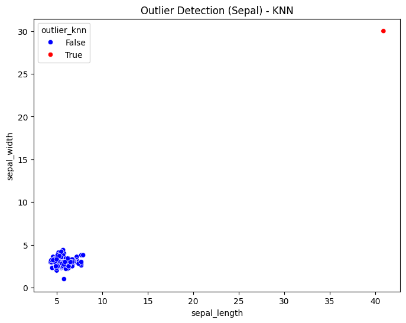
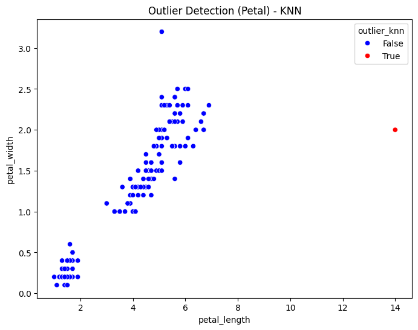

<!DOCTYPE html>


<html lang="en" data-content_root="./" >

  <head>
    <meta charset="utf-8" />
    <meta name="viewport" content="width=device-width, initial-scale=1.0" /><meta name="viewport" content="width=device-width, initial-scale=1" />

    <title>Data Understanding &#8212; My sample book</title>
  
  
  
  <script data-cfasync="false">
    document.documentElement.dataset.mode = localStorage.getItem("mode") || "";
    document.documentElement.dataset.theme = localStorage.getItem("theme") || "";
  </script>
  
  <!-- Loaded before other Sphinx assets -->
  <link href="_static/styles/theme.css?digest=dfe6caa3a7d634c4db9b" rel="stylesheet" />
<link href="_static/styles/bootstrap.css?digest=dfe6caa3a7d634c4db9b" rel="stylesheet" />
<link href="_static/styles/pydata-sphinx-theme.css?digest=dfe6caa3a7d634c4db9b" rel="stylesheet" />

  
  <link href="_static/vendor/fontawesome/6.5.2/css/all.min.css?digest=dfe6caa3a7d634c4db9b" rel="stylesheet" />
  <link rel="preload" as="font" type="font/woff2" crossorigin href="_static/vendor/fontawesome/6.5.2/webfonts/fa-solid-900.woff2" />
<link rel="preload" as="font" type="font/woff2" crossorigin href="_static/vendor/fontawesome/6.5.2/webfonts/fa-brands-400.woff2" />
<link rel="preload" as="font" type="font/woff2" crossorigin href="_static/vendor/fontawesome/6.5.2/webfonts/fa-regular-400.woff2" />

    <link rel="stylesheet" type="text/css" href="_static/pygments.css?v=fa44fd50" />
    <link rel="stylesheet" type="text/css" href="_static/styles/sphinx-book-theme.css?v=eba8b062" />
    <link rel="stylesheet" type="text/css" href="_static/togglebutton.css?v=13237357" />
    <link rel="stylesheet" type="text/css" href="_static/copybutton.css?v=76b2166b" />
    <link rel="stylesheet" type="text/css" href="_static/mystnb.4510f1fc1dee50b3e5859aac5469c37c29e427902b24a333a5f9fcb2f0b3ac41.css" />
    <link rel="stylesheet" type="text/css" href="_static/sphinx-thebe.css?v=4fa983c6" />
    <link rel="stylesheet" type="text/css" href="_static/sphinx-design.min.css?v=95c83b7e" />
  
  <!-- Pre-loaded scripts that we'll load fully later -->
  <link rel="preload" as="script" href="_static/scripts/bootstrap.js?digest=dfe6caa3a7d634c4db9b" />
<link rel="preload" as="script" href="_static/scripts/pydata-sphinx-theme.js?digest=dfe6caa3a7d634c4db9b" />
  <script src="_static/vendor/fontawesome/6.5.2/js/all.min.js?digest=dfe6caa3a7d634c4db9b"></script>

    <script src="_static/documentation_options.js?v=9eb32ce0"></script>
    <script src="_static/doctools.js?v=9a2dae69"></script>
    <script src="_static/sphinx_highlight.js?v=dc90522c"></script>
    <script src="_static/clipboard.min.js?v=a7894cd8"></script>
    <script src="_static/copybutton.js?v=f281be69"></script>
    <script src="_static/scripts/sphinx-book-theme.js?v=887ef09a"></script>
    <script>let toggleHintShow = 'Click to show';</script>
    <script>let toggleHintHide = 'Click to hide';</script>
    <script>let toggleOpenOnPrint = 'true';</script>
    <script src="_static/togglebutton.js?v=4a39c7ea"></script>
    <script>var togglebuttonSelector = '.toggle, .admonition.dropdown';</script>
    <script src="_static/design-tabs.js?v=f930bc37"></script>
    <script>const THEBE_JS_URL = "https://unpkg.com/thebe@0.8.2/lib/index.js"; const thebe_selector = ".thebe,.cell"; const thebe_selector_input = "pre"; const thebe_selector_output = ".output, .cell_output"</script>
    <script async="async" src="_static/sphinx-thebe.js?v=c100c467"></script>
    <script>var togglebuttonSelector = '.toggle, .admonition.dropdown';</script>
    <script>const THEBE_JS_URL = "https://unpkg.com/thebe@0.8.2/lib/index.js"; const thebe_selector = ".thebe,.cell"; const thebe_selector_input = "pre"; const thebe_selector_output = ".output, .cell_output"</script>
    <script>window.MathJax = {"options": {"processHtmlClass": "tex2jax_process|mathjax_process|math|output_area"}}</script>
    <script defer="defer" src="https://cdn.jsdelivr.net/npm/mathjax@3/es5/tex-mml-chtml.js"></script>
    <script>DOCUMENTATION_OPTIONS.pagename = 'pendat2';</script>
    <link rel="index" title="Index" href="genindex.html" />
    <link rel="search" title="Search" href="search.html" />
    <link rel="prev" title="Tugas 1" href="pendat1.html" />
  <meta name="viewport" content="width=device-width, initial-scale=1"/>
  <meta name="docsearch:language" content="en"/>
  </head>
  
  
  <body data-bs-spy="scroll" data-bs-target=".bd-toc-nav" data-offset="180" data-bs-root-margin="0px 0px -60%" data-default-mode="">

  
  
  <div id="pst-skip-link" class="skip-link d-print-none"><a href="#main-content">Skip to main content</a></div>
  
  <div id="pst-scroll-pixel-helper"></div>
  
  <button type="button" class="btn rounded-pill" id="pst-back-to-top">
    <i class="fa-solid fa-arrow-up"></i>Back to top</button>

  
  <input type="checkbox"
          class="sidebar-toggle"
          id="pst-primary-sidebar-checkbox"/>
  <label class="overlay overlay-primary" for="pst-primary-sidebar-checkbox"></label>
  
  <input type="checkbox"
          class="sidebar-toggle"
          id="pst-secondary-sidebar-checkbox"/>
  <label class="overlay overlay-secondary" for="pst-secondary-sidebar-checkbox"></label>
  
  <div class="search-button__wrapper">
    <div class="search-button__overlay"></div>
    <div class="search-button__search-container">
<form class="bd-search d-flex align-items-center"
      action="search.html"
      method="get">
  <i class="fa-solid fa-magnifying-glass"></i>
  <input type="search"
         class="form-control"
         name="q"
         id="search-input"
         placeholder="Search this book..."
         aria-label="Search this book..."
         autocomplete="off"
         autocorrect="off"
         autocapitalize="off"
         spellcheck="false"/>
  <span class="search-button__kbd-shortcut"><kbd class="kbd-shortcut__modifier">Ctrl</kbd>+<kbd>K</kbd></span>
</form></div>
  </div>

  <div class="pst-async-banner-revealer d-none">
  <aside id="bd-header-version-warning" class="d-none d-print-none" aria-label="Version warning"></aside>
</div>

  
    <header class="bd-header navbar navbar-expand-lg bd-navbar d-print-none">
    </header>
  

  <div class="bd-container">
    <div class="bd-container__inner bd-page-width">
      
      
      
      <div class="bd-sidebar-primary bd-sidebar">
        

  
  <div class="sidebar-header-items sidebar-primary__section">
    
    
    
    
  </div>
  
    <div class="sidebar-primary-items__start sidebar-primary__section">
        <div class="sidebar-primary-item">

  
    
  

<a class="navbar-brand logo" href="intro.html">
  
  
  
  
  
    
    
      
    
    
    
    <script>document.write(``);</script>
  
  
</a></div>
        <div class="sidebar-primary-item">

 <script>
 document.write(`
   <button class="btn search-button-field search-button__button" title="Search" aria-label="Search" data-bs-placement="bottom" data-bs-toggle="tooltip">
    <i class="fa-solid fa-magnifying-glass"></i>
    <span class="search-button__default-text">Search</span>
    <span class="search-button__kbd-shortcut"><kbd class="kbd-shortcut__modifier">Ctrl</kbd>+<kbd class="kbd-shortcut__modifier">K</kbd></span>
   </button>
 `);
 </script></div>
        <div class="sidebar-primary-item"><nav class="bd-links bd-docs-nav" aria-label="Main">
    <div class="bd-toc-item navbar-nav active">
        
        <ul class="nav bd-sidenav bd-sidenav__home-link">
            <li class="toctree-l1">
                <a class="reference internal" href="intro.html">
                    Selamat Datang di Konten Saya (Data Mining)
                </a>
            </li>
        </ul>
        <ul class="current nav bd-sidenav">
<li class="toctree-l1"><a class="reference internal" href="pendat1.html">Tugas 1</a></li>


<li class="toctree-l1 current active"><a class="current reference internal" href="#">Data Understanding</a></li>
</ul>

    </div>
</nav></div>
    </div>
  
  
  <div class="sidebar-primary-items__end sidebar-primary__section">
  </div>
  
  <div id="rtd-footer-container"></div>


      </div>
      
      <main id="main-content" class="bd-main" role="main">
        
        

<div class="sbt-scroll-pixel-helper"></div>

          <div class="bd-content">
            <div class="bd-article-container">
              
              <div class="bd-header-article d-print-none">
<div class="header-article-items header-article__inner">
  
    <div class="header-article-items__start">
      
        <div class="header-article-item"><button class="sidebar-toggle primary-toggle btn btn-sm" title="Toggle primary sidebar" data-bs-placement="bottom" data-bs-toggle="tooltip">
  <span class="fa-solid fa-bars"></span>
</button></div>
      
    </div>
  
  
    <div class="header-article-items__end">
      
        <div class="header-article-item">

<div class="article-header-buttons">


<div class="dropdown dropdown-source-buttons">
  <button class="btn dropdown-toggle" type="button" data-bs-toggle="dropdown" aria-expanded="false" aria-label="Source repositories">
    <i class="fab fa-github"></i>
  </button>
  <ul class="dropdown-menu">
      
      
      
      <li><a href="https://github.com/executablebooks/jupyter-book" target="_blank"
   class="btn btn-sm btn-source-repository-button dropdown-item"
   title="Source repository"
   data-bs-placement="left" data-bs-toggle="tooltip"
>
  

<span class="btn__icon-container">
  <i class="fab fa-github"></i>
  </span>
<span class="btn__text-container">Repository</span>
</a>
</li>
      
      
      
      
      <li><a href="https://github.com/executablebooks/jupyter-book/issues/new?title=Issue%20on%20page%20%2Fpendat2.html&body=Your%20issue%20content%20here." target="_blank"
   class="btn btn-sm btn-source-issues-button dropdown-item"
   title="Open an issue"
   data-bs-placement="left" data-bs-toggle="tooltip"
>
  

<span class="btn__icon-container">
  <i class="fas fa-lightbulb"></i>
  </span>
<span class="btn__text-container">Open issue</span>
</a>
</li>
      
  </ul>
</div>


<div class="dropdown dropdown-download-buttons">
  <button class="btn dropdown-toggle" type="button" data-bs-toggle="dropdown" aria-expanded="false" aria-label="Download this page">
    <i class="fas fa-download"></i>
  </button>
  <ul class="dropdown-menu">
      
      
      
      <li><a href="_sources/pendat2.ipynb" target="_blank"
   class="btn btn-sm btn-download-source-button dropdown-item"
   title="Download source file"
   data-bs-placement="left" data-bs-toggle="tooltip"
>
  

<span class="btn__icon-container">
  <i class="fas fa-file"></i>
  </span>
<span class="btn__text-container">.ipynb</span>
</a>
</li>
      
      
      
      
      <li>
<button onclick="window.print()"
  class="btn btn-sm btn-download-pdf-button dropdown-item"
  title="Print to PDF"
  data-bs-placement="left" data-bs-toggle="tooltip"
>
  

<span class="btn__icon-container">
  <i class="fas fa-file-pdf"></i>
  </span>
<span class="btn__text-container">.pdf</span>
</button>
</li>
      
  </ul>
</div>


<button onclick="toggleFullScreen()"
  class="btn btn-sm btn-fullscreen-button"
  title="Fullscreen mode"
  data-bs-placement="bottom" data-bs-toggle="tooltip"
>
  

<span class="btn__icon-container">
  <i class="fas fa-expand"></i>
  </span>

</button>


<script>
document.write(`
  <button class="btn btn-sm nav-link pst-navbar-icon theme-switch-button" title="light/dark" aria-label="light/dark" data-bs-placement="bottom" data-bs-toggle="tooltip">
    <i class="theme-switch fa-solid fa-sun fa-lg" data-mode="light"></i>
    <i class="theme-switch fa-solid fa-moon fa-lg" data-mode="dark"></i>
    <i class="theme-switch fa-solid fa-circle-half-stroke fa-lg" data-mode="auto"></i>
  </button>
`);
</script>


<script>
document.write(`
  <button class="btn btn-sm pst-navbar-icon search-button search-button__button" title="Search" aria-label="Search" data-bs-placement="bottom" data-bs-toggle="tooltip">
    <i class="fa-solid fa-magnifying-glass fa-lg"></i>
  </button>
`);
</script>
<button class="sidebar-toggle secondary-toggle btn btn-sm" title="Toggle secondary sidebar" data-bs-placement="bottom" data-bs-toggle="tooltip">
    <span class="fa-solid fa-list"></span>
</button>
</div></div>
      
    </div>
  
</div>
</div>
              
              

<div id="jb-print-docs-body" class="onlyprint">
    <h1>Data Understanding</h1>
    <!-- Table of contents -->
    <div id="print-main-content">
        <div id="jb-print-toc">
            
            <div>
                <h2> Contents </h2>
            </div>
            <nav aria-label="Page">
                <ul class="visible nav section-nav flex-column">
<li class="toc-h2 nav-item toc-entry"><a class="reference internal nav-link" href="#outlier-detection">Outlier Detection</a><ul class="nav section-nav flex-column">
<li class="toc-h3 nav-item toc-entry"><a class="reference internal nav-link" href="#pengertian">Pengertian</a></li>
<li class="toc-h3 nav-item toc-entry"><a class="reference internal nav-link" href="#pentingnya-outlier-detection">Pentingnya Outlier Detection</a></li>
</ul>
</li>
<li class="toc-h2 nav-item toc-entry"><a class="reference internal nav-link" href="#outlier-detection-dengan-metode-k-nearest-neighbors-knn">Outlier Detection dengan Metode K-Nearest Neighbors (KNN)</a><ul class="nav section-nav flex-column">
<li class="toc-h3 nav-item toc-entry"><a class="reference internal nav-link" href="#knn-untuk-deteksi-outlier">KNN untuk Deteksi Outlier</a></li>
<li class="toc-h3 nav-item toc-entry"><a class="reference internal nav-link" href="#langkah-langkah-deteksi-outlier-dengan-knn">Langkah - Langkah Deteksi Outlier dengan KNN</a></li>
<li class="toc-h3 nav-item toc-entry"><a class="reference internal nav-link" href="#kesimpulan">Kesimpulan</a></li>
<li class="toc-h3 nav-item toc-entry"><a class="reference internal nav-link" href="#implementasi-knn-untuk-outlier-detection">Implementasi KNN untuk Outlier Detection</a></li>
</ul>
</li>
<li class="toc-h2 nav-item toc-entry"><a class="reference internal nav-link" href="#local-outlier-factor-lof">Local Outlier Factor (LOF)</a><ul class="nav section-nav flex-column">
<li class="toc-h3 nav-item toc-entry"><a class="reference internal nav-link" href="#apa-itu-lof">Apa Itu LOF</a></li>
<li class="toc-h3 nav-item toc-entry"><a class="reference internal nav-link" href="#bagaimana-tahapan-lof">Bagaimana Tahapan LOF</a></li>
<li class="toc-h3 nav-item toc-entry"><a class="reference internal nav-link" href="#menghitung-manual-lof">Menghitung Manual LOF</a><ul class="nav section-nav flex-column">
<li class="toc-h4 nav-item toc-entry"><a class="reference internal nav-link" href="#hitung-lof-untuk-titik-outlier-20-0-30-0"><strong>Hitung LOF untuk Titik Outlier (20.0, 30.0)</strong></a></li>
</ul>
</li>
<li class="toc-h3 nav-item toc-entry"><a class="reference internal nav-link" href="#implementasi-pakai-sklearn-untuk-data-contoh">Implementasi Pakai Sklearn Untuk Data Contoh</a></li>
</ul>
</li>
</ul>
            </nav>
        </div>
    </div>
</div>

              
                
<div id="searchbox"></div>
                <article class="bd-article">
                  
  <section class="tex2jax_ignore mathjax_ignore" id="data-understanding">
<h1>Data Understanding<a class="headerlink" href="#data-understanding" title="Link to this heading">#</a></h1>
<section id="outlier-detection">
<h2>Outlier Detection<a class="headerlink" href="#outlier-detection" title="Link to this heading">#</a></h2>
<section id="pengertian">
<h3>Pengertian<a class="headerlink" href="#pengertian" title="Link to this heading">#</a></h3>
<p>Outlier detection adalah proses mengidentifikasi data yang memiliki nilai atau pola yang berbeda secara signifikan dibandingkan dengan mayoritas data lainnya dalam dataset. Outlier bisa terjadi karena kesalahan pengukuran, variasi alami dalam data, atau kejadian luar biasa yang perlu diperhatikan.</p>
</section>
<section id="pentingnya-outlier-detection">
<h3>Pentingnya Outlier Detection<a class="headerlink" href="#pentingnya-outlier-detection" title="Link to this heading">#</a></h3>
<ul class="simple">
<li><p>Mendeteksi Anomali: Berguna dalam deteksi penipuan, kegagalan sistem, atau pola tak biasa.</p></li>
<li><p>Membersihkan Data: Membantu dalam preprocessing data sebelum analisis lebih lanjut.</p></li>
</ul>
</section>
</section>
<section id="outlier-detection-dengan-metode-k-nearest-neighbors-knn">
<h2>Outlier Detection dengan Metode K-Nearest Neighbors (KNN)<a class="headerlink" href="#outlier-detection-dengan-metode-k-nearest-neighbors-knn" title="Link to this heading">#</a></h2>
<section id="knn-untuk-deteksi-outlier">
<h3>KNN untuk Deteksi Outlier<a class="headerlink" href="#knn-untuk-deteksi-outlier" title="Link to this heading">#</a></h3>
<p>Metode K-Nearest Neighbors (KNN) bekerja berdasarkan kedekatan antar data. KNN bekerja dengan mengukur jarak antar titik data untuk menentukan apakah suatu titik merupakan outlier atau tidak. Logika di balik deteksi outlier menggunakan KNN adalah:</p>
<ul class="simple">
<li><p>Jarak ke Tetangga Terdekat (Distance to Nearest Neighbors)</p></li>
<li><p>Rata-rata Jarak ke Tetangga Terdekat (Average Distance to k-Neighbors)</p></li>
<li><p>Density-Based Outlier Detection</p></li>
</ul>
</section>
<section id="langkah-langkah-deteksi-outlier-dengan-knn">
<h3>Langkah - Langkah Deteksi Outlier dengan KNN<a class="headerlink" href="#langkah-langkah-deteksi-outlier-dengan-knn" title="Link to this heading">#</a></h3>
<ul class="simple">
<li><p>Memuat dan Mengeksplorasi Data
Memeriksa distribusi data dengan statistik deskriptif dan visualisasi seperti histogram, boxplot, atau scatter plot.</p></li>
<li><p>Menentukan K (Jumlah Tetangga Terdekat)
Nilai k harus dipilih dengan baik agar deteksi outlier tidak terlalu sensitif atau terlalu lemah. Biasanya, k berkisar antara 5 hingga 20, tergantung pada ukuran dataset.</p></li>
<li><p>Menghitung Jarak ke K Tetangga Terdekat
Menggunakan metrik seperti Euclidean Distance, Manhattan Distance, atau Minkowski Distance.</p></li>
<li><p>Menghitung Skor Kepadatan (Density Score)
Beberapa pendekatan untuk mengukur apakah suatu titik adalah outlier:</p>
<ul>
<li><p>K-Nearest Neighbor Distance
Menghitung jarak rata-rata ke K tetangga terdekat. Jika jarak rata-rata terlalu besar, titik tersebut dianggap sebagai outlier.</p></li>
<li><p>Local Outlier Factor (LOF)
LOF membandingkan kepadatan lokal suatu titik dengan kepadatan lokal tetangganya. Jika kepadatan lokal suatu titik lebih kecil dibandingkan dengan tetangganya, maka titik tersebut dianggap sebagai outlier.</p></li>
<li><p>Distance-Based Outlier Score
Jika sebuah titik memiliki jumlah tetangga yang sangat sedikit dalam radius tertentu, maka kemungkinan besar titik tersebut adalah outlier.</p></li>
</ul>
</li>
</ul>
</section>
<section id="kesimpulan">
<h3>Kesimpulan<a class="headerlink" href="#kesimpulan" title="Link to this heading">#</a></h3>
<p>Deteksi outlier dengan KNN dalam Data Understanding membantu dalam mengenali anomali dalam dataset dengan melihat jarak antar titik data. Teknik ini berguna untuk membersihkan data sebelum analisis lebih lanjut dan dapat diterapkan dalam berbagai bidang seperti fraud detection, anomali keuangan, dan keamanan siber. Namun, pemilihan nilai k yang tepat sangat penting untuk mendapatkan hasil deteksi yang akurat.</p>
</section>
<section id="implementasi-knn-untuk-outlier-detection">
<h3>Implementasi KNN untuk Outlier Detection<a class="headerlink" href="#implementasi-knn-untuk-outlier-detection" title="Link to this heading">#</a></h3>
<p>menginstall pymysql dan psycopg2 yang berfungsi sebagai konektor untuk basis data.</p>
<div class="cell docutils container">
<div class="cell_input docutils container">
<div class="highlight-ipython3 notranslate"><div class="highlight"><pre><span></span><span class="o">%</span><span class="k">pip</span> install pymysql
<span class="o">%</span><span class="k">pip</span> install psycopg2
</pre></div>
</div>
</div>
<div class="cell_output docutils container">
<div class="output stream highlight-myst-ansi notranslate"><div class="highlight"><pre><span></span>Collecting pymysql
  Downloading PyMySQL-1.1.1-py3-none-any.whl.metadata (4.4 kB)
Downloading PyMySQL-1.1.1-py3-none-any.whl (44 kB)
</pre></div>
</div>
<div class="output stream highlight-myst-ansi notranslate"><div class="highlight"><pre><span></span>Installing collected packages: pymysql
</pre></div>
</div>
<div class="output stream highlight-myst-ansi notranslate"><div class="highlight"><pre><span></span>Successfully installed pymysql-1.1.1
</pre></div>
</div>
<div class="output stream highlight-myst-ansi notranslate"><div class="highlight"><pre><span></span><span class=" -Color -Color-Bold">[</span><span class=" -Color -Color-Blue">notice</span><span class=" -Color -Color-Bold">]</span> A new release of pip is available: <span class=" -Color -Color-Red">24.3.1</span> -&gt; <span class=" -Color -Color-Green">25.0.1</span>
<span class=" -Color -Color-Bold">[</span><span class=" -Color -Color-Blue">notice</span><span class=" -Color -Color-Bold">]</span> To update, run: <span class=" -Color -Color-Green">python3 -m pip install --upgrade pip</span>
</pre></div>
</div>
<div class="output stream highlight-myst-ansi notranslate"><div class="highlight"><pre><span></span>Note: you may need to restart the kernel to use updated packages.
</pre></div>
</div>
<div class="output stream highlight-myst-ansi notranslate"><div class="highlight"><pre><span></span>Collecting psycopg2
</pre></div>
</div>
<div class="output stream highlight-myst-ansi notranslate"><div class="highlight"><pre><span></span>  Downloading psycopg2-2.9.10.tar.gz (385 kB)
</pre></div>
</div>
<div class="output stream highlight-myst-ansi notranslate"><div class="highlight"><pre><span></span>  Preparing metadata (setup.py) ... ?25l-
</pre></div>
</div>
<div class="output stream highlight-myst-ansi notranslate"><div class="highlight"><pre><span></span> \ done
?25hBuilding wheels for collected packages: psycopg2
</pre></div>
</div>
<div class="output stream highlight-myst-ansi notranslate"><div class="highlight"><pre><span></span>  Building wheel for psycopg2 (setup.py) ... ?25l-
</pre></div>
</div>
<div class="output stream highlight-myst-ansi notranslate"><div class="highlight"><pre><span></span> \
</pre></div>
</div>
<div class="output stream highlight-myst-ansi notranslate"><div class="highlight"><pre><span></span> |
</pre></div>
</div>
<div class="output stream highlight-myst-ansi notranslate"><div class="highlight"><pre><span></span> /
</pre></div>
</div>
<div class="output stream highlight-myst-ansi notranslate"><div class="highlight"><pre><span></span> -
</pre></div>
</div>
<div class="output stream highlight-myst-ansi notranslate"><div class="highlight"><pre><span></span> \
</pre></div>
</div>
<div class="output stream highlight-myst-ansi notranslate"><div class="highlight"><pre><span></span> |
</pre></div>
</div>
<div class="output stream highlight-myst-ansi notranslate"><div class="highlight"><pre><span></span> /
</pre></div>
</div>
<div class="output stream highlight-myst-ansi notranslate"><div class="highlight"><pre><span></span> -
</pre></div>
</div>
<div class="output stream highlight-myst-ansi notranslate"><div class="highlight"><pre><span></span> \
</pre></div>
</div>
<div class="output stream highlight-myst-ansi notranslate"><div class="highlight"><pre><span></span> |
</pre></div>
</div>
<div class="output stream highlight-myst-ansi notranslate"><div class="highlight"><pre><span></span> /
</pre></div>
</div>
<div class="output stream highlight-myst-ansi notranslate"><div class="highlight"><pre><span></span> -
</pre></div>
</div>
<div class="output stream highlight-myst-ansi notranslate"><div class="highlight"><pre><span></span> \
</pre></div>
</div>
<div class="output stream highlight-myst-ansi notranslate"><div class="highlight"><pre><span></span> |
</pre></div>
</div>
<div class="output stream highlight-myst-ansi notranslate"><div class="highlight"><pre><span></span> /
</pre></div>
</div>
<div class="output stream highlight-myst-ansi notranslate"><div class="highlight"><pre><span></span> -
</pre></div>
</div>
<div class="output stream highlight-myst-ansi notranslate"><div class="highlight"><pre><span></span> \
</pre></div>
</div>
<div class="output stream highlight-myst-ansi notranslate"><div class="highlight"><pre><span></span> |
</pre></div>
</div>
<div class="output stream highlight-myst-ansi notranslate"><div class="highlight"><pre><span></span> /
</pre></div>
</div>
<div class="output stream highlight-myst-ansi notranslate"><div class="highlight"><pre><span></span> -
</pre></div>
</div>
<div class="output stream highlight-myst-ansi notranslate"><div class="highlight"><pre><span></span> \
</pre></div>
</div>
<div class="output stream highlight-myst-ansi notranslate"><div class="highlight"><pre><span></span> |
</pre></div>
</div>
<div class="output stream highlight-myst-ansi notranslate"><div class="highlight"><pre><span></span> /
</pre></div>
</div>
<div class="output stream highlight-myst-ansi notranslate"><div class="highlight"><pre><span></span> -
</pre></div>
</div>
<div class="output stream highlight-myst-ansi notranslate"><div class="highlight"><pre><span></span> \
</pre></div>
</div>
<div class="output stream highlight-myst-ansi notranslate"><div class="highlight"><pre><span></span> |
</pre></div>
</div>
<div class="output stream highlight-myst-ansi notranslate"><div class="highlight"><pre><span></span> /
</pre></div>
</div>
<div class="output stream highlight-myst-ansi notranslate"><div class="highlight"><pre><span></span> -
</pre></div>
</div>
<div class="output stream highlight-myst-ansi notranslate"><div class="highlight"><pre><span></span> \
</pre></div>
</div>
<div class="output stream highlight-myst-ansi notranslate"><div class="highlight"><pre><span></span> |
</pre></div>
</div>
<div class="output stream highlight-myst-ansi notranslate"><div class="highlight"><pre><span></span> /
</pre></div>
</div>
<div class="output stream highlight-myst-ansi notranslate"><div class="highlight"><pre><span></span> -
</pre></div>
</div>
<div class="output stream highlight-myst-ansi notranslate"><div class="highlight"><pre><span></span> \
</pre></div>
</div>
<div class="output stream highlight-myst-ansi notranslate"><div class="highlight"><pre><span></span> |
</pre></div>
</div>
<div class="output stream highlight-myst-ansi notranslate"><div class="highlight"><pre><span></span> /
</pre></div>
</div>
<div class="output stream highlight-myst-ansi notranslate"><div class="highlight"><pre><span></span> -
</pre></div>
</div>
<div class="output stream highlight-myst-ansi notranslate"><div class="highlight"><pre><span></span> done
?25h  Created wheel for psycopg2: filename=psycopg2-2.9.10-cp312-cp312-linux_x86_64.whl size=635558 sha256=5befead6e13f92ba6793117a6b6b250ae4dbfaa20a3ec5a9d0ec3c767da4947b
  Stored in directory: /home/codespace/.cache/pip/wheels/ac/bb/ce/afa589c50b6004d3a06fc691e71bd09c9bd5f01e5921e5329b
Successfully built psycopg2
</pre></div>
</div>
<div class="output stream highlight-myst-ansi notranslate"><div class="highlight"><pre><span></span>Installing collected packages: psycopg2
</pre></div>
</div>
<div class="output stream highlight-myst-ansi notranslate"><div class="highlight"><pre><span></span>Successfully installed psycopg2-2.9.10

<span class=" -Color -Color-Bold">[</span><span class=" -Color -Color-Blue">notice</span><span class=" -Color -Color-Bold">]</span> A new release of pip is available: <span class=" -Color -Color-Red">24.3.1</span> -&gt; <span class=" -Color -Color-Green">25.0.1</span>
<span class=" -Color -Color-Bold">[</span><span class=" -Color -Color-Blue">notice</span><span class=" -Color -Color-Bold">]</span> To update, run: <span class=" -Color -Color-Green">python3 -m pip install --upgrade pip</span>
</pre></div>
</div>
<div class="output stream highlight-myst-ansi notranslate"><div class="highlight"><pre><span></span>Note: you may need to restart the kernel to use updated packages.
</pre></div>
</div>
</div>
</div>
<p>Mendeteksi outlier menggunakan metode KNN pada data yang diambil dari dua database yaitu PostgreSQL dan MySQL. Langkah pertama yakni mengambil data dari sumber diatas, kemudian digabung berdasar kolom ‘id’ dan ‘class’. Setelah digabungkan lalu ambil data yang hanya berisi kolom fitur numerik (petal_length, petal_width, sepal_lenght, sepal_width) lalu mengubah data menjadi array NumPy.</p>
<p>Menggunakan KNN dengan k = 5 untuk menentukan kedekatan antar data, dimana k = 5 yang berarti akan mencari lima tetangga terdekat untuk setiap titik data, lalu menggunakan jarak terjauh deri kelima tetangga sebagai ukuran outlier score.</p>
<p>Untuk menentukan ambang batas (threshold) dari jarak yang mengindikasikan outlier, kode ini menghitung rata-rata skor jarak dan menambahkan dua kali standar deviasi dari skor jarak tersebut. Jika jarak suatu titik data lebih besar dari threshold yang dihitung, maka titik tersebut dianggap sebagai outlier.</p>
<p>Hasil dari deteksi outlier ini kemudian ditambahkan ke dalam kolom baru dalam dataframe yang menunjukkan apakah suatu data merupakan outlier (True) atau bukan (False). Untuk memvisualisasikan hasil deteksi outlier, kode ini juga menyertakan dua grafik scatter plot yang menunjukkan data sepal dan petal, dengan warna merah untuk outlier dan biru untuk data yang bukan outlier. Kode ini juga mencetak jumlah outlier yang ditemukan serta menampilkan data outlier itu sendiri.</p>
<div class="cell docutils container">
<div class="cell_input docutils container">
<div class="highlight-ipython3 notranslate"><div class="highlight"><pre><span></span><span class="kn">import</span> <span class="nn">psycopg2</span>
<span class="kn">import</span> <span class="nn">pymysql</span>
<span class="kn">import</span> <span class="nn">numpy</span> <span class="k">as</span> <span class="nn">np</span>
<span class="kn">import</span> <span class="nn">pandas</span> <span class="k">as</span> <span class="nn">pd</span>
<span class="kn">import</span> <span class="nn">seaborn</span> <span class="k">as</span> <span class="nn">sns</span>
<span class="kn">import</span> <span class="nn">matplotlib.pyplot</span> <span class="k">as</span> <span class="nn">plt</span>
<span class="kn">from</span> <span class="nn">sklearn.neighbors</span> <span class="kn">import</span> <span class="n">NearestNeighbors</span>

<span class="k">def</span> <span class="nf">get_pg_data</span><span class="p">():</span>
    <span class="n">conn</span> <span class="o">=</span> <span class="n">psycopg2</span><span class="o">.</span><span class="n">connect</span><span class="p">(</span>
        <span class="n">host</span><span class="o">=</span><span class="s2">&quot;pg-289a0f88-pendataa.g.aivencloud.com&quot;</span><span class="p">,</span>
        <span class="n">user</span><span class="o">=</span><span class="s2">&quot;avnadmin&quot;</span><span class="p">,</span>
        <span class="n">password</span><span class="o">=</span><span class="s2">&quot;AVNS_1tT_bnHq81keqZ9n-wh&quot;</span><span class="p">,</span>
        <span class="n">database</span><span class="o">=</span><span class="s2">&quot;defaultdb&quot;</span><span class="p">,</span>
        <span class="n">port</span><span class="o">=</span><span class="mi">22825</span>
    <span class="p">)</span>
    <span class="n">cursor</span> <span class="o">=</span> <span class="n">conn</span><span class="o">.</span><span class="n">cursor</span><span class="p">()</span>
    <span class="n">cursor</span><span class="o">.</span><span class="n">execute</span><span class="p">(</span><span class="s2">&quot;SELECT * FROM iris_postgresql&quot;</span><span class="p">)</span>
    <span class="n">data</span> <span class="o">=</span> <span class="n">cursor</span><span class="o">.</span><span class="n">fetchall</span><span class="p">()</span>
    <span class="n">columns</span> <span class="o">=</span> <span class="p">[</span><span class="n">desc</span><span class="p">[</span><span class="mi">0</span><span class="p">]</span> <span class="k">for</span> <span class="n">desc</span> <span class="ow">in</span> <span class="n">cursor</span><span class="o">.</span><span class="n">description</span><span class="p">]</span>
    <span class="n">cursor</span><span class="o">.</span><span class="n">close</span><span class="p">()</span>
    <span class="n">conn</span><span class="o">.</span><span class="n">close</span><span class="p">()</span>
    <span class="k">return</span> <span class="n">pd</span><span class="o">.</span><span class="n">DataFrame</span><span class="p">(</span><span class="n">data</span><span class="p">,</span> <span class="n">columns</span><span class="o">=</span><span class="n">columns</span><span class="p">)</span>

<span class="k">def</span> <span class="nf">get_mysql_data</span><span class="p">():</span>
    <span class="n">conn</span> <span class="o">=</span> <span class="n">pymysql</span><span class="o">.</span><span class="n">connect</span><span class="p">(</span>
        <span class="n">host</span><span class="o">=</span><span class="s2">&quot;mysql-9b686fb-pendataa.g.aivencloud.com&quot;</span><span class="p">,</span>
        <span class="n">user</span><span class="o">=</span><span class="s2">&quot;avnadmin&quot;</span><span class="p">,</span>
        <span class="n">password</span><span class="o">=</span><span class="s2">&quot;AVNS_ZuFdVS1OQkmHx4P1Wtp&quot;</span><span class="p">,</span>
        <span class="n">database</span><span class="o">=</span><span class="s2">&quot;defaultdb&quot;</span><span class="p">,</span>
        <span class="n">port</span><span class="o">=</span><span class="mi">22825</span>
    <span class="p">)</span>
    <span class="n">cursor</span> <span class="o">=</span> <span class="n">conn</span><span class="o">.</span><span class="n">cursor</span><span class="p">()</span>
    <span class="n">cursor</span><span class="o">.</span><span class="n">execute</span><span class="p">(</span><span class="s2">&quot;SELECT * FROM irismysql&quot;</span><span class="p">)</span>
    <span class="n">data</span> <span class="o">=</span> <span class="n">cursor</span><span class="o">.</span><span class="n">fetchall</span><span class="p">()</span>
    <span class="n">columns</span> <span class="o">=</span> <span class="p">[</span><span class="n">desc</span><span class="p">[</span><span class="mi">0</span><span class="p">]</span> <span class="k">for</span> <span class="n">desc</span> <span class="ow">in</span> <span class="n">cursor</span><span class="o">.</span><span class="n">description</span><span class="p">]</span>
    <span class="n">cursor</span><span class="o">.</span><span class="n">close</span><span class="p">()</span>
    <span class="n">conn</span><span class="o">.</span><span class="n">close</span><span class="p">()</span>
    <span class="k">return</span> <span class="n">pd</span><span class="o">.</span><span class="n">DataFrame</span><span class="p">(</span><span class="n">data</span><span class="p">,</span> <span class="n">columns</span><span class="o">=</span><span class="n">columns</span><span class="p">)</span>

<span class="c1"># Ambil data dari kedua database</span>
<span class="n">df_postgresql</span> <span class="o">=</span> <span class="n">get_pg_data</span><span class="p">()</span>
<span class="n">df_mysql</span> <span class="o">=</span> <span class="n">get_mysql_data</span><span class="p">()</span>

<span class="c1"># Gabungkan berdasarkan kolom &#39;id&#39;</span>
<span class="n">df_merged</span> <span class="o">=</span> <span class="n">pd</span><span class="o">.</span><span class="n">merge</span><span class="p">(</span><span class="n">df_mysql</span><span class="p">,</span> <span class="n">df_postgresql</span><span class="p">,</span> <span class="n">on</span><span class="o">=</span><span class="p">[</span><span class="s2">&quot;id&quot;</span><span class="p">,</span> <span class="s2">&quot;class&quot;</span><span class="p">],</span> <span class="n">how</span><span class="o">=</span><span class="s2">&quot;inner&quot;</span><span class="p">)</span>

<span class="c1"># Ambil data fitur numerik</span>
<span class="n">feature_columns</span> <span class="o">=</span> <span class="p">[</span><span class="s2">&quot;petal_length&quot;</span><span class="p">,</span> <span class="s2">&quot;petal_width&quot;</span><span class="p">,</span> <span class="s2">&quot;sepal_length&quot;</span><span class="p">,</span> <span class="s2">&quot;sepal_width&quot;</span><span class="p">]</span>
<span class="n">data_values</span> <span class="o">=</span> <span class="n">df_merged</span><span class="p">[</span><span class="n">feature_columns</span><span class="p">]</span><span class="o">.</span><span class="n">values</span>

<span class="c1"># KNN Outlier Detection</span>
<span class="k">def</span> <span class="nf">knn_outlier_detection</span><span class="p">(</span><span class="n">data</span><span class="p">,</span> <span class="n">k</span><span class="o">=</span><span class="mi">5</span><span class="p">):</span>
    <span class="n">neigh</span> <span class="o">=</span> <span class="n">NearestNeighbors</span><span class="p">(</span><span class="n">n_neighbors</span><span class="o">=</span><span class="n">k</span><span class="p">)</span>
    <span class="n">neigh</span><span class="o">.</span><span class="n">fit</span><span class="p">(</span><span class="n">data</span><span class="p">)</span>
    <span class="n">distances</span><span class="p">,</span> <span class="n">_</span> <span class="o">=</span> <span class="n">neigh</span><span class="o">.</span><span class="n">kneighbors</span><span class="p">(</span><span class="n">data</span><span class="p">)</span>
    <span class="n">avg_distances</span> <span class="o">=</span> <span class="n">distances</span><span class="p">[:,</span> <span class="o">-</span><span class="mi">1</span><span class="p">]</span>  <span class="c1"># Ambil jarak k-terjauh sebagai skor</span>
    <span class="k">return</span> <span class="n">avg_distances</span>

<span class="c1"># Hitung K-NN distance</span>
<span class="n">df_merged</span><span class="p">[</span><span class="s2">&quot;knn_distance&quot;</span><span class="p">]</span> <span class="o">=</span> <span class="n">knn_outlier_detection</span><span class="p">(</span><span class="n">data_values</span><span class="p">,</span> <span class="n">k</span><span class="o">=</span><span class="mi">5</span><span class="p">)</span>

<span class="c1"># Tentukan threshold sebagai nilai rata-rata + 2 standar deviasi</span>
<span class="n">threshold</span> <span class="o">=</span> <span class="n">df_merged</span><span class="p">[</span><span class="s2">&quot;knn_distance&quot;</span><span class="p">]</span><span class="o">.</span><span class="n">mean</span><span class="p">()</span> <span class="o">+</span> <span class="mi">2</span> <span class="o">*</span> <span class="n">df_merged</span><span class="p">[</span><span class="s2">&quot;knn_distance&quot;</span><span class="p">]</span><span class="o">.</span><span class="n">std</span><span class="p">()</span>
<span class="n">df_merged</span><span class="p">[</span><span class="s2">&quot;outlier_knn&quot;</span><span class="p">]</span> <span class="o">=</span> <span class="n">df_merged</span><span class="p">[</span><span class="s2">&quot;knn_distance&quot;</span><span class="p">]</span> <span class="o">&gt;</span> <span class="n">threshold</span>

<span class="c1"># Cetak hasil</span>
<span class="n">df_result</span> <span class="o">=</span> <span class="n">df_merged</span><span class="p">[[</span><span class="s2">&quot;id&quot;</span><span class="p">,</span> <span class="s2">&quot;class&quot;</span><span class="p">,</span> <span class="s2">&quot;petal_length&quot;</span><span class="p">,</span> <span class="s2">&quot;petal_width&quot;</span><span class="p">,</span> <span class="s2">&quot;sepal_length&quot;</span><span class="p">,</span> <span class="s2">&quot;sepal_width&quot;</span><span class="p">,</span> <span class="s2">&quot;knn_distance&quot;</span><span class="p">,</span> <span class="s2">&quot;outlier_knn&quot;</span><span class="p">]]</span>
<span class="nb">print</span><span class="p">(</span><span class="n">df_result</span><span class="o">.</span><span class="n">to_string</span><span class="p">(</span><span class="n">index</span><span class="o">=</span><span class="kc">False</span><span class="p">))</span>
<span class="n">num_outliers</span> <span class="o">=</span> <span class="n">df_merged</span><span class="p">[</span><span class="s2">&quot;outlier_knn&quot;</span><span class="p">]</span><span class="o">.</span><span class="n">sum</span><span class="p">()</span>
<span class="nb">print</span><span class="p">(</span><span class="sa">f</span><span class="s2">&quot;</span><span class="se">\n</span><span class="s2">Jumlah outlier: </span><span class="si">{</span><span class="n">num_outliers</span><span class="si">}</span><span class="s2">&quot;</span><span class="p">)</span>

<span class="c1"># Cetak data outlier</span>
<span class="n">outliers</span> <span class="o">=</span> <span class="n">df_merged</span><span class="p">[</span><span class="n">df_merged</span><span class="p">[</span><span class="s2">&quot;outlier_knn&quot;</span><span class="p">]]</span>
<span class="nb">print</span><span class="p">(</span><span class="s2">&quot;</span><span class="se">\n</span><span class="s2">Data Outlier:&quot;</span><span class="p">)</span>
<span class="nb">print</span><span class="p">(</span><span class="n">outliers</span><span class="o">.</span><span class="n">to_string</span><span class="p">(</span><span class="n">index</span><span class="o">=</span><span class="kc">False</span><span class="p">))</span>

<span class="c1"># Visualisasi outlier berdasarkan K-NN</span>
<span class="n">plt</span><span class="o">.</span><span class="n">figure</span><span class="p">(</span><span class="n">figsize</span><span class="o">=</span><span class="p">(</span><span class="mi">8</span><span class="p">,</span> <span class="mi">6</span><span class="p">))</span>
<span class="n">sns</span><span class="o">.</span><span class="n">scatterplot</span><span class="p">(</span>
    <span class="n">x</span><span class="o">=</span><span class="n">df_merged</span><span class="p">[</span><span class="s2">&quot;sepal_length&quot;</span><span class="p">],</span> <span class="n">y</span><span class="o">=</span><span class="n">df_merged</span><span class="p">[</span><span class="s2">&quot;sepal_width&quot;</span><span class="p">],</span>
    <span class="n">hue</span><span class="o">=</span><span class="n">df_merged</span><span class="p">[</span><span class="s2">&quot;outlier_knn&quot;</span><span class="p">],</span> <span class="n">palette</span><span class="o">=</span><span class="p">{</span><span class="kc">False</span><span class="p">:</span> <span class="s2">&quot;blue&quot;</span><span class="p">,</span> <span class="kc">True</span><span class="p">:</span> <span class="s2">&quot;red&quot;</span><span class="p">}</span>
<span class="p">)</span>
<span class="n">plt</span><span class="o">.</span><span class="n">title</span><span class="p">(</span><span class="s2">&quot;Outlier Detection (Sepal) - KNN&quot;</span><span class="p">)</span>
<span class="n">plt</span><span class="o">.</span><span class="n">show</span><span class="p">()</span>

<span class="n">plt</span><span class="o">.</span><span class="n">figure</span><span class="p">(</span><span class="n">figsize</span><span class="o">=</span><span class="p">(</span><span class="mi">8</span><span class="p">,</span> <span class="mi">6</span><span class="p">))</span>
<span class="n">sns</span><span class="o">.</span><span class="n">scatterplot</span><span class="p">(</span>
    <span class="n">x</span><span class="o">=</span><span class="n">df_merged</span><span class="p">[</span><span class="s2">&quot;petal_length&quot;</span><span class="p">],</span> <span class="n">y</span><span class="o">=</span><span class="n">df_merged</span><span class="p">[</span><span class="s2">&quot;petal_width&quot;</span><span class="p">],</span>
    <span class="n">hue</span><span class="o">=</span><span class="n">df_merged</span><span class="p">[</span><span class="s2">&quot;outlier_knn&quot;</span><span class="p">],</span> <span class="n">palette</span><span class="o">=</span><span class="p">{</span><span class="kc">False</span><span class="p">:</span> <span class="s2">&quot;blue&quot;</span><span class="p">,</span> <span class="kc">True</span><span class="p">:</span> <span class="s2">&quot;red&quot;</span><span class="p">}</span>
<span class="p">)</span>
<span class="n">plt</span><span class="o">.</span><span class="n">title</span><span class="p">(</span><span class="s2">&quot;Outlier Detection (Petal) - KNN&quot;</span><span class="p">)</span>
<span class="n">plt</span><span class="o">.</span><span class="n">show</span><span class="p">()</span>
</pre></div>
</div>
</div>
<div class="cell_output docutils container">
<div class="output stream highlight-myst-ansi notranslate"><div class="highlight"><pre><span></span> id           class  petal_length  petal_width  sepal_length  sepal_width  knn_distance  outlier_knn
  1     Iris-setosa           1.4          0.2           5.1          3.5      0.141421        False
  2     Iris-setosa          14.0          2.0          40.9         30.0     43.517123         True
  3     Iris-setosa           1.3          0.2           4.7          3.2      0.264575        False
  4     Iris-setosa           1.5          0.2           4.6          3.1      0.244949        False
  5     Iris-setosa           1.4          0.2           5.0          3.6      0.223607        False
  6     Iris-setosa           1.7          0.4           5.4          3.9      0.374166        False
  7     Iris-setosa           1.4          0.3           4.6          3.4      0.316228        False
  8     Iris-setosa           1.5          0.2           5.0          3.4      0.200000        False
  9     Iris-setosa           1.4          0.2           4.4          2.9      0.346410        False
 10     Iris-setosa           1.5          0.1           4.9          3.1      0.173205        False
 11     Iris-setosa           1.5          0.2           5.4          3.7      0.331662        False
 12     Iris-setosa           1.6          0.2           4.8          3.4      0.300000        False
 13     Iris-setosa           1.4          0.1           4.8          3.0      0.200000        False
 14     Iris-setosa           1.1          0.1           4.3          3.0      0.479583        False
 15     Iris-setosa           1.2          0.2           5.8          4.0      0.556776        False
 16     Iris-setosa           1.5          0.4           5.7          4.4      0.616441        False
 17     Iris-setosa           1.3          0.4           5.4          3.9      0.387298        False
 18     Iris-setosa           1.4          0.3           5.1          3.5      0.173205        False
 19     Iris-setosa           1.7          0.3           5.7          3.8      0.509902        False
 20     Iris-setosa           1.5          0.3           5.1          3.8      0.264575        False
 21     Iris-setosa           1.7          0.2           5.4          3.4      0.360555        False
 22     Iris-setosa           1.5          0.4           5.1          3.7      0.264575        False
 23     Iris-setosa           1.0          0.2           4.6          3.6      0.538516        False
 24     Iris-setosa           1.7          0.5           5.1          3.3      0.387298        False
 25     Iris-setosa           1.9          0.2           4.8          3.4      0.424264        False
 26     Iris-setosa           1.6          0.2           5.0          3.0      0.223607        False
 27     Iris-setosa           1.6          0.4           5.0          3.4      0.244949        False
 28     Iris-setosa           1.5          0.2           5.2          3.5      0.173205        False
 29     Iris-setosa           1.4          0.2           5.2          3.4      0.173205        False
 30     Iris-setosa           1.6          0.2           4.7          3.2      0.223607        False
 31     Iris-setosa           1.6          0.2           4.8          3.1      0.173205        False
 32     Iris-setosa           1.5          0.4           5.4          3.4      0.316228        False
 33     Iris-setosa           1.5          0.1           5.2          4.1      0.424264        False
 34     Iris-setosa           1.4          0.2           5.5          4.2      0.412311        False
 35     Iris-setosa           1.5          0.1           4.9          3.1      0.173205        False
 36     Iris-setosa           1.2          0.2           5.0          3.2      0.346410        False
 37     Iris-setosa           1.3          0.2           5.5          3.5      0.346410        False
 38     Iris-setosa           1.5          0.1           4.9          3.1      0.173205        False
 39     Iris-setosa           1.3          0.2           4.4          3.0      0.300000        False
 40     Iris-setosa           1.5          0.2           5.1          3.4      0.141421        False
 41     Iris-setosa           1.3          0.3           5.0          3.5      0.244949        False
 42     Iris-setosa           1.3          0.3           4.5          2.3      0.781025        False
 43     Iris-setosa           1.3          0.2           4.4          3.2      0.300000        False
 44     Iris-setosa           1.6          0.6           5.0          3.5      0.374166        False
 45     Iris-setosa           1.9          0.4           5.1          3.8      0.412311        False
 46     Iris-setosa           1.4          0.3           4.8          3.0      0.264575        False
 47     Iris-setosa           1.6          0.2           5.1          3.8      0.300000        False
 48     Iris-setosa           1.4          0.2           4.6          3.2      0.223607        False
 49     Iris-setosa           1.5          0.2           5.3          3.7      0.244949        False
 50     Iris-setosa           1.4          0.2           5.0          3.3      0.223607        False
 51 Iris-versicolor           4.7          1.4           7.0          3.2      0.458258        False
 52 Iris-versicolor           4.5          1.5           6.4          3.2      0.374166        False
 53 Iris-versicolor           4.9          1.5           6.9          3.1      0.346410        False
 54 Iris-versicolor           4.0          1.3           5.5          2.3      0.435890        False
 55 Iris-versicolor           4.6          1.5           6.5          2.8      0.374166        False
 56 Iris-versicolor           4.5          1.3           5.7          2.8      0.331662        False
 57 Iris-versicolor           4.7          1.6           6.3          3.3      0.458258        False
 58 Iris-versicolor           3.3          1.0           4.9          2.4      0.721110        False
 59 Iris-versicolor           4.6          1.3           6.6          2.9      0.316228        False
 60 Iris-versicolor           3.9          1.4           5.2          2.7      0.529150        False
 61 Iris-versicolor           3.5          1.0           5.0          2.0      0.714143        False
 62 Iris-versicolor           4.2          1.5           5.9          3.0      0.360555        False
 63 Iris-versicolor           4.0          1.0           6.0          2.2      0.583095        False
 64 Iris-versicolor           4.7          1.4           6.1          2.9      0.424264        False
 65 Iris-versicolor           3.6          1.3           5.6          2.9      0.519615        False
 66 Iris-versicolor           4.4          1.4           6.7          3.1      0.346410        False
 67 Iris-versicolor           4.5          1.5           5.6          3.0      0.412311        False
 68 Iris-versicolor           4.1          1.0           5.8          2.7      0.360555        False
 69 Iris-versicolor           4.5          1.5           6.2          2.2      0.678233        False
 70 Iris-versicolor           3.9          1.1           5.6          2.5      0.264575        False
 71 Iris-versicolor           4.8          1.8           5.9          3.2      0.424264        False
 72 Iris-versicolor           4.0          1.3           6.1          2.8      0.400000        False
 73 Iris-versicolor           4.9          1.5           6.3          2.5      0.424264        False
 74 Iris-versicolor           4.7          1.2           6.1          2.8      0.435890        False
 75 Iris-versicolor           4.3          1.3           6.4          2.9      0.387298        False
 76 Iris-versicolor           4.4          1.4           6.6          3.0      0.316228        False
 77 Iris-versicolor           4.8          1.4           6.8          2.8      0.374166        False
 78 Iris-versicolor           5.0          1.7           6.7          3.0      0.424264        False
 79 Iris-versicolor           4.5          1.5           6.0          2.9      0.346410        False
 80 Iris-versicolor           3.5          1.0           5.7          2.6      0.447214        False
 81 Iris-versicolor           3.8          1.1           5.5          2.4      0.300000        False
 82 Iris-versicolor           3.7          1.0           5.5          2.4      0.435890        False
 83 Iris-versicolor           3.9          1.2           5.8          2.7      0.300000        False
 84 Iris-versicolor           5.1          1.6           6.0          2.7      0.374166        False
 85 Iris-versicolor           4.5          1.5           5.4          3.0      0.489898        False
 86 Iris-versicolor           4.5          1.6           6.0          3.4      0.469042        False
 87 Iris-versicolor           4.7          1.5           6.7          3.1      0.331662        False
 88 Iris-versicolor           4.4          1.3           6.3          2.3      0.608276        False
 89 Iris-versicolor           4.1          1.3           5.6          3.0      0.316228        False
 90 Iris-versicolor           4.0          1.3           5.5          2.5      0.300000        False
 91 Iris-versicolor           4.4          1.2           5.5          2.6      0.424264        False
 92 Iris-versicolor           4.6          1.4           6.1          3.0      0.346410        False
 93 Iris-versicolor           4.0          1.2           5.8          2.6      0.264575        False
 94 Iris-versicolor           3.3          1.0           5.0          2.3      0.648074        False
 95 Iris-versicolor           4.2          1.3           5.6          2.7      0.300000        False
 96 Iris-versicolor           4.2          1.2           5.7          3.0      0.331662        False
 97 Iris-versicolor           4.2          1.3           5.7          2.9      0.223607        False
 98 Iris-versicolor           4.3          1.3           6.2          2.9      0.346410        False
 99 Iris-versicolor           3.0          1.1           5.1          2.5      0.793725        False
100 Iris-versicolor           4.1          1.3           5.7          2.8      0.244949        False
101  Iris-virginica           6.0          2.5           6.3          3.3      0.556776        False
102  Iris-virginica           5.1          1.9           5.8          2.7      0.331662        False
103  Iris-virginica           5.9          2.1           7.1          3.0      0.458258        False
104  Iris-virginica           5.6          1.8           6.3          2.9      0.387298        False
105  Iris-virginica           5.8          2.2           6.5          3.0      0.387298        False
106  Iris-virginica           6.6          2.1           7.6          3.0      0.547723        False
107  Iris-virginica           4.5          1.7           4.9          2.5      0.877496        False
108  Iris-virginica           6.3          1.8           7.3          2.9      0.547723        False
109  Iris-virginica           5.8          1.8           6.7          2.5      0.616441        False
110  Iris-virginica           6.1          2.5           7.2          3.6      0.754983        False
111  Iris-virginica           5.1          2.0           6.5          3.2      0.424264        False
112  Iris-virginica           5.3          1.9           6.4          2.7      0.387298        False
113  Iris-virginica           5.5          2.1           6.8          3.0      0.374166        False
114  Iris-virginica           5.0          2.0           5.7          2.5      0.519615        False
115  Iris-virginica           5.1          2.4           5.8          2.8      0.519615        False
116  Iris-virginica           5.3          2.3           6.4          3.2      0.387298        False
117  Iris-virginica           5.5          1.8           6.5          3.0      0.387298        False
118  Iris-virginica           6.7          2.2           7.7          3.8      1.004988        False
119  Iris-virginica           6.9          2.3           7.7          2.6      0.927362        False
120  Iris-virginica           5.0          1.5           6.0          2.2      0.583095        False
121  Iris-virginica           5.7          2.3           6.9          3.2      0.300000        False
122  Iris-virginica           4.9          2.0           5.6          2.8      0.458258        False
123  Iris-virginica           6.7          2.0           7.7          2.8      0.678233        False
124  Iris-virginica           4.9          1.8           6.3          2.7      0.360555        False
125  Iris-virginica           5.7          2.1           6.7          3.3      0.374166        False
126  Iris-virginica           6.0          1.8           7.2          3.2      0.469042        False
127  Iris-virginica           4.8          1.8           6.2          2.8      0.387298        False
128  Iris-virginica           4.9          1.8           6.1          3.0      0.300000        False
129  Iris-virginica           5.6          2.1           6.4          2.8      0.374166        False
130  Iris-virginica           5.8          1.6           7.2          3.0      0.556776        False
131  Iris-virginica           6.1          1.9           7.4          2.8      0.509902        False
132  Iris-virginica           6.4          2.0           7.9          3.8      0.932738        False
133  Iris-virginica           5.6          2.2           6.4          2.8      0.435890        False
134  Iris-virginica           5.1          1.5           6.3          2.8      0.435890        False
135  Iris-virginica           5.6          1.4           6.1          2.6      0.663325        False
136  Iris-virginica           6.1          2.3           7.7          3.0      0.678233        False
137  Iris-virginica           5.6          2.4           6.3          3.4      0.435890        False
138  Iris-virginica           5.5          1.8           6.4          3.1      0.435890        False
139  Iris-virginica           4.8          1.8           6.0          3.0      0.316228        False
140  Iris-virginica           5.4          2.1           6.9          3.1      0.374166        False
141  Iris-virginica           5.6          2.4           6.7          3.1      0.346410        False
142  Iris-virginica           5.1          2.3           6.9          3.1      0.509902        False
143  Iris-virginica           5.1          1.9           5.8          2.7      0.331662        False
144  Iris-virginica           5.9          2.3           6.8          3.2      0.346410        False
145  Iris-virginica           5.7          2.5           6.7          3.3      0.400000        False
146  Iris-virginica           5.2          2.3           6.7          3.0      0.374166        False
147  Iris-virginica           5.0          1.9           6.3          2.5      0.412311        False
148  Iris-virginica           5.2          2.0           6.5          3.0      0.360555        False
149  Iris-virginica           5.4          2.3           6.2          3.4      0.616441        False
150  Iris-virginica           5.1          1.8           5.9          3.0      0.331662        False
151            ????           5.1          3.2           5.8          1.0      2.092845        False

Jumlah outlier: 1

Data Outlier:
 id       class  petal_length  petal_width  sepal_length  sepal_width  knn_distance  outlier_knn
  2 Iris-setosa          14.0          2.0          40.9         30.0     43.517123         True
</pre></div>
</div>


</div>
</div>
</section>
</section>
<section id="local-outlier-factor-lof">
<h2>Local Outlier Factor (LOF)<a class="headerlink" href="#local-outlier-factor-lof" title="Link to this heading">#</a></h2>
<section id="apa-itu-lof">
<h3>Apa Itu LOF<a class="headerlink" href="#apa-itu-lof" title="Link to this heading">#</a></h3>
<p>Local Outlier Factor, disingkat LOF adalah algoritme untuk mencari titik-titik data yang menyimpang (anomali) dengan mengukur simpangan setempat tiap titik data terhadap para tetangganya. Algoritma ini diusulkan oleh Markus M. Breunig, Hans-Peter Kriegel, Raymond T. Ng, dan Jörg Sander pada tahun 2000. LOF menggunakan konsep yang sama dengan DBSCAN dan OPTICS, yaitu konsep “jarak inti” dan “jarak keterjangkauan” yang sering dipakai dalam perkiraan kerapatan setempat.</p>
</section>
<section id="bagaimana-tahapan-lof">
<h3>Bagaimana Tahapan LOF<a class="headerlink" href="#bagaimana-tahapan-lof" title="Link to this heading">#</a></h3>
<p>Tahapan dari metode Local Outlier Factor (LOF) dalam mendeteksi outlier adalah sebagai berikut:</p>
<ol class="arabic simple">
<li><p>Tentukan Jumlah Tetangga (k): Tentukan jumlah tetangga terdekat (k) yang akan digunakan untuk perhitungan kepadatan lokal. Misalnya, n_neighbors=90 yang berarti setiap titik akan dibandingkan dengan 90 tetangga terdekatnya.</p></li>
<li><p>Hitung Jarak K-Tetangga Terdekat: Untuk setiap titik data, hitung jarak ke k tetangga terdekat. Jarak ini digunakan untuk menentukan kepadatan lokal titik data tersebut.</p></li>
<li><p>Hitung Kepadatan Lokal: Hitung kepadatan lokal setiap titik data dengan melihat seberapa rapat titik tersebut dengan tetangganya dibandingkan dengan tetangga lainnya. Titik dengan kepadatan rendah lebih cenderung dianggap outlier.</p></li>
<li><p>Hitung LOF (Local Outlier Factor): Hitung rasio antara kepadatan lokal titik data terhadap kepadatan lokal tetangganya. Rasio ini disebut LOF. Titik dengan LOF yang lebih tinggi menunjukkan bahwa titik tersebut lebih terisolasi atau lebih tidak padat dibandingkan tetangganya, yang mengindikasikan bahwa titik tersebut adalah outlier.</p></li>
<li><p>Penetapan Outlier: Tentukan titik yang memiliki LOF lebih besar dari ambang batas tertentu sebagai outlier. Biasanya, titik dengan LOF lebih besar dari 1 dianggap outlier, karena menunjukkan bahwa titik tersebut lebih jarang ditemukan di daerah tersebut dibandingkan dengan tetangganya.</p></li>
<li><p>Hasil Prediksi: Setiap titik data diberi label -1 jika dianggap outlier dan 1 jika dianggap normal.</p></li>
</ol>
</section>
<section id="menghitung-manual-lof">
<h3>Menghitung Manual LOF<a class="headerlink" href="#menghitung-manual-lof" title="Link to this heading">#</a></h3>
<p>Berikut adalah cara singkat menghitung <strong>Local Outlier Factor (LOF)</strong> untuk satu titik data dengan dua fitur:</p>
<ol class="arabic simple">
<li><p><strong>Dataset</strong>:<br />
Misalkan data berikut:</p></li>
</ol>
<div class="pst-scrollable-table-container"><table class="table">
<thead>
<tr class="row-odd"><th class="head"><p>ID</p></th>
<th class="head"><p>Feature1</p></th>
<th class="head"><p>Feature2</p></th>
</tr>
</thead>
<tbody>
<tr class="row-even"><td><p>1</p></td>
<td><p>1.0</p></td>
<td><p>2.0</p></td>
</tr>
<tr class="row-odd"><td><p>2</p></td>
<td><p>2.0</p></td>
<td><p>3.0</p></td>
</tr>
<tr class="row-even"><td><p>3</p></td>
<td><p>3.0</p></td>
<td><p>4.0</p></td>
</tr>
<tr class="row-odd"><td><p>4</p></td>
<td><p>4.0</p></td>
<td><p>5.0</p></td>
</tr>
<tr class="row-even"><td><p>5</p></td>
<td><p>5.0</p></td>
<td><p>6.0</p></td>
</tr>
<tr class="row-odd"><td><p>6</p></td>
<td><p>6.0</p></td>
<td><p>7.0</p></td>
</tr>
<tr class="row-even"><td><p>7</p></td>
<td><p>7.0</p></td>
<td><p>8.0</p></td>
</tr>
<tr class="row-odd"><td><p>8</p></td>
<td><p>8.0</p></td>
<td><p>9.0</p></td>
</tr>
<tr class="row-even"><td><p>9</p></td>
<td><p>9.0</p></td>
<td><p>10.0</p></td>
</tr>
<tr class="row-odd"><td><p>10</p></td>
<td><p>20.0</p></td>
<td><p>30.0</p></td>
</tr>
</tbody>
</table>
</div>
<p>Dari tabel di atas, titik <strong>(20.0, 30.0)</strong> adalah outlier karena jauh berbeda dibandingkan titik lainnya.</p>
<section id="hitung-lof-untuk-titik-outlier-20-0-30-0">
<h4><strong>Hitung LOF untuk Titik Outlier (20.0, 30.0)</strong><a class="headerlink" href="#hitung-lof-untuk-titik-outlier-20-0-30-0" title="Link to this heading">#</a></h4>
<p>Kita akan menghitung <strong>jarak Euclidean</strong> antara titik outlier <strong>(20.0, 30.0)</strong> dan titik lainnya, khususnya dengan tetangga terdekatnya <strong>(9.0, 10.0)</strong> dan <strong>(8.0, 9.0)</strong>.</p>
<ol class="arabic simple">
<li><p><strong>Formula Euclidean Distance</strong><br />
Jarak Euclidean antara dua titik ((x_1, y_1)) dan ((x_2, y_2)) adalah:</p></li>
</ol>
<p><span class="math notranslate nohighlight">\(
d = \sqrt{(x_2 - x_1)^2 + (y_2 - y_1)^2}
\)</span></p>
<hr class="docutils" />
<ul class="simple">
<li><p>** Jarak ke Titik (9.0, 10.0)**
<span class="math notranslate nohighlight">\(
d = \sqrt{(9.0 - 20.0)^2 + (10.0 - 30.0)^2}
\)</span></p></li>
</ul>
<p><span class="math notranslate nohighlight">\(
d = \sqrt{(-11.0)^2 + (-20.0)^2}
\)</span></p>
<p><span class="math notranslate nohighlight">\(
d = \sqrt{121 + 400}
\)</span></p>
<p><span class="math notranslate nohighlight">\(
d = \sqrt{521} \approx 22.83
\)</span></p>
<hr class="docutils" />
<ul class="simple">
<li><p><strong>Jarak ke Titik (8.0, 9.0)</strong>
<span class="math notranslate nohighlight">\(
d = \sqrt{(8.0 - 20.0)^2 + (9.0 - 30.0)^2}
\)</span></p></li>
</ul>
<p><span class="math notranslate nohighlight">\(
d = \sqrt{(-12.0)^2 + (-21.0)^2}
\)</span></p>
<p><span class="math notranslate nohighlight">\(
d = \sqrt{144 + 441}
\)</span></p>
<p><span class="math notranslate nohighlight">\(
d = \sqrt{585} \approx 24.19
\)</span></p>
<hr class="docutils" />
<ul class="simple">
<li><p><strong>Jarak Euclidean ke Titik (9.0, 10.0) ≈ 22.83</strong></p></li>
<li><p><strong>Jarak Euclidean ke Titik (8.0, 9.0) ≈ 24.19</strong></p></li>
</ul>
<p>Nilai ini digunakan dalam perhitungan <strong>reachability distance</strong> dan <strong>Local Outlier Factor (LOF)</strong>.</p>
<ol class="arabic simple" start="2">
<li><p><strong>Tentukan k-Tetangga Terdekat</strong> (k=2):</p>
<ul class="simple">
<li><p>Tetangga: Titik 9 &amp; Titik 8</p></li>
</ul>
</li>
<li><p><strong>Hitung Reachability Distance</strong>:</p>
<ul class="simple">
<li><p><span class="math notranslate nohighlight">\( \text{reach-dist}(10,9) = 22.36 \)</span></p></li>
<li><p><span class="math notranslate nohighlight">\( \text{reach-dist}(10,8) = 24.41 \)</span></p></li>
</ul>
</li>
<li><p><strong>Hitung Local Reachability Density (LRD)</strong>:<br />
$<span class="math notranslate nohighlight">\(
\text{LRD}(10) = \frac{1}{\frac{1}{2} (22.36 + 24.41)} = 0.043
\)</span>$</p></li>
<li><p><strong>Hitung LOF</strong>:<br />
$<span class="math notranslate nohighlight">\(
\text{LOF}(10) = \frac{0.043}{0.31} + \frac{0.043}{0.35} = 7.5
\)</span>$</p></li>
<li><p><strong>Interpretasi</strong>:</p>
<ul class="simple">
<li><p><strong>LOF = 7.5</strong> → Sangat tinggi dibandingkan 1, jadi titik ini adalah <strong>outlier yang jelas</strong>!</p></li>
</ul>
</li>
</ol>
<p>LOF menunjukkan bahwa titik <strong>(20.0, 30.0)</strong> sangat terisolasi dibandingkan dengan tetangga terdekatnya.</p>
</section>
</section>
<section id="implementasi-pakai-sklearn-untuk-data-contoh">
<h3>Implementasi Pakai Sklearn Untuk Data Contoh<a class="headerlink" href="#implementasi-pakai-sklearn-untuk-data-contoh" title="Link to this heading">#</a></h3>
<div class="cell docutils container">
<div class="cell_input docutils container">
<div class="highlight-ipython3 notranslate"><div class="highlight"><pre><span></span><span class="kn">import</span> <span class="nn">numpy</span> <span class="k">as</span> <span class="nn">np</span>
<span class="kn">import</span> <span class="nn">pandas</span> <span class="k">as</span> <span class="nn">pd</span>
<span class="kn">from</span> <span class="nn">sklearn.neighbors</span> <span class="kn">import</span> <span class="n">LocalOutlierFactor</span>

<span class="c1"># Dataset contoh dengan 10 data (termasuk 1 outlier pada ID 10)</span>
<span class="n">data</span> <span class="o">=</span> <span class="p">{</span>
    <span class="s1">&#39;Feature1&#39;</span><span class="p">:</span> <span class="p">[</span><span class="mf">1.0</span><span class="p">,</span> <span class="mf">2.0</span><span class="p">,</span> <span class="mf">3.0</span><span class="p">,</span> <span class="mf">4.0</span><span class="p">,</span> <span class="mf">5.0</span><span class="p">,</span> <span class="mf">6.0</span><span class="p">,</span> <span class="mf">7.0</span><span class="p">,</span> <span class="mf">8.0</span><span class="p">,</span> <span class="mf">9.0</span><span class="p">,</span> <span class="mf">20.0</span><span class="p">],</span>
    <span class="s1">&#39;Feature2&#39;</span><span class="p">:</span> <span class="p">[</span><span class="mf">2.0</span><span class="p">,</span> <span class="mf">3.0</span><span class="p">,</span> <span class="mf">4.0</span><span class="p">,</span> <span class="mf">5.0</span><span class="p">,</span> <span class="mf">6.0</span><span class="p">,</span> <span class="mf">7.0</span><span class="p">,</span> <span class="mf">8.0</span><span class="p">,</span> <span class="mf">9.0</span><span class="p">,</span> <span class="mf">10.0</span><span class="p">,</span> <span class="mf">30.0</span><span class="p">]</span>
<span class="p">}</span>

<span class="c1"># Membuat DataFrame</span>
<span class="n">df</span> <span class="o">=</span> <span class="n">pd</span><span class="o">.</span><span class="n">DataFrame</span><span class="p">(</span><span class="n">data</span><span class="p">)</span>

<span class="c1"># Inisialisasi model LOF dengan k=2 (2 tetangga terdekat)</span>
<span class="n">lof</span> <span class="o">=</span> <span class="n">LocalOutlierFactor</span><span class="p">(</span><span class="n">n_neighbors</span><span class="o">=</span><span class="mi">2</span><span class="p">)</span>

<span class="c1"># Fit model LOF dan prediksi label (1 untuk normal, -1 untuk outlier)</span>
<span class="n">lof_labels</span> <span class="o">=</span> <span class="n">lof</span><span class="o">.</span><span class="n">fit_predict</span><span class="p">(</span><span class="n">df</span><span class="p">)</span>

<span class="c1"># Menambahkan hasil prediksi ke DataFrame</span>
<span class="n">df</span><span class="p">[</span><span class="s1">&#39;LOF Label&#39;</span><span class="p">]</span> <span class="o">=</span> <span class="n">lof_labels</span>

<span class="c1"># Menampilkan hasil</span>
<span class="nb">print</span><span class="p">(</span><span class="n">df</span><span class="p">)</span>

<span class="c1"># Menampilkan jumlah outlier</span>
<span class="n">num_outliers</span> <span class="o">=</span> <span class="p">(</span><span class="n">lof_labels</span> <span class="o">==</span> <span class="o">-</span><span class="mi">1</span><span class="p">)</span><span class="o">.</span><span class="n">sum</span><span class="p">()</span>
<span class="nb">print</span><span class="p">(</span><span class="sa">f</span><span class="s2">&quot;</span><span class="se">\n</span><span class="s2">Jumlah outlier: </span><span class="si">{</span><span class="n">num_outliers</span><span class="si">}</span><span class="s2">&quot;</span><span class="p">)</span>

<span class="c1"># Menampilkan data outlier</span>
<span class="n">outliers</span> <span class="o">=</span> <span class="n">df</span><span class="p">[</span><span class="n">df</span><span class="p">[</span><span class="s1">&#39;LOF Label&#39;</span><span class="p">]</span> <span class="o">==</span> <span class="o">-</span><span class="mi">1</span><span class="p">]</span>
<span class="nb">print</span><span class="p">(</span><span class="s2">&quot;</span><span class="se">\n</span><span class="s2">Data Outlier:&quot;</span><span class="p">)</span>
<span class="nb">print</span><span class="p">(</span><span class="n">outliers</span><span class="p">)</span>
</pre></div>
</div>
</div>
<div class="cell_output docutils container">
<div class="output stream highlight-myst-ansi notranslate"><div class="highlight"><pre><span></span>   Feature1  Feature2  LOF Label
0       1.0       2.0          1
1       2.0       3.0          1
2       3.0       4.0          1
3       4.0       5.0          1
4       5.0       6.0          1
5       6.0       7.0          1
6       7.0       8.0          1
7       8.0       9.0          1
8       9.0      10.0          1
9      20.0      30.0         -1

Jumlah outlier: 1

Data Outlier:
   Feature1  Feature2  LOF Label
9      20.0      30.0         -1
</pre></div>
</div>
</div>
</div>
<p>Menginstall pymysql dan psycopg2 yang berfungsi sebagai konektor untuk basis data.</p>
<div class="cell docutils container">
<div class="cell_input docutils container">
<div class="highlight-ipython3 notranslate"><div class="highlight"><pre><span></span><span class="o">%</span><span class="k">pip</span> install pymysql
<span class="o">%</span><span class="k">pip</span> install psycopg2
</pre></div>
</div>
</div>
<div class="cell_output docutils container">
<div class="output stream highlight-myst-ansi notranslate"><div class="highlight"><pre><span></span>Requirement already satisfied: pymysql in /usr/local/python/3.12.1/lib/python3.12/site-packages (1.1.1)
</pre></div>
</div>
<div class="output stream highlight-myst-ansi notranslate"><div class="highlight"><pre><span></span><span class=" -Color -Color-Bold">[</span><span class=" -Color -Color-Blue">notice</span><span class=" -Color -Color-Bold">]</span> A new release of pip is available: <span class=" -Color -Color-Red">24.3.1</span> -&gt; <span class=" -Color -Color-Green">25.0.1</span>
<span class=" -Color -Color-Bold">[</span><span class=" -Color -Color-Blue">notice</span><span class=" -Color -Color-Bold">]</span> To update, run: <span class=" -Color -Color-Green">python3 -m pip install --upgrade pip</span>
</pre></div>
</div>
<div class="output stream highlight-myst-ansi notranslate"><div class="highlight"><pre><span></span>Note: you may need to restart the kernel to use updated packages.
</pre></div>
</div>
<div class="output stream highlight-myst-ansi notranslate"><div class="highlight"><pre><span></span>Requirement already satisfied: psycopg2 in /usr/local/python/3.12.1/lib/python3.12/site-packages (2.9.10)
</pre></div>
</div>
<div class="output stream highlight-myst-ansi notranslate"><div class="highlight"><pre><span></span><span class=" -Color -Color-Bold">[</span><span class=" -Color -Color-Blue">notice</span><span class=" -Color -Color-Bold">]</span> A new release of pip is available: <span class=" -Color -Color-Red">24.3.1</span> -&gt; <span class=" -Color -Color-Green">25.0.1</span>
<span class=" -Color -Color-Bold">[</span><span class=" -Color -Color-Blue">notice</span><span class=" -Color -Color-Bold">]</span> To update, run: <span class=" -Color -Color-Green">python3 -m pip install --upgrade pip</span>
</pre></div>
</div>
<div class="output stream highlight-myst-ansi notranslate"><div class="highlight"><pre><span></span>Note: you may need to restart the kernel to use updated packages.
</pre></div>
</div>
</div>
</div>
<p>Menggabungkan data dari 2 database</p>
<div class="cell docutils container">
<div class="cell_input docutils container">
<div class="highlight-ipython3 notranslate"><div class="highlight"><pre><span></span><span class="kn">import</span> <span class="nn">psycopg2</span>
<span class="kn">import</span> <span class="nn">pymysql</span>
<span class="kn">import</span> <span class="nn">numpy</span> <span class="k">as</span> <span class="nn">np</span>
<span class="kn">import</span> <span class="nn">pandas</span> <span class="k">as</span> <span class="nn">pd</span>
<span class="kn">import</span> <span class="nn">seaborn</span> <span class="k">as</span> <span class="nn">sns</span>
<span class="kn">import</span> <span class="nn">matplotlib.pyplot</span> <span class="k">as</span> <span class="nn">plt</span>
<span class="kn">from</span> <span class="nn">scipy.spatial.distance</span> <span class="kn">import</span> <span class="n">euclidean</span>

<span class="k">def</span> <span class="nf">get_pg_data</span><span class="p">():</span>
    <span class="n">conn</span> <span class="o">=</span> <span class="n">psycopg2</span><span class="o">.</span><span class="n">connect</span><span class="p">(</span>
        <span class="n">host</span><span class="o">=</span><span class="s2">&quot;pg-289a0f88-pendataa.g.aivencloud.com&quot;</span><span class="p">,</span>
        <span class="n">user</span><span class="o">=</span><span class="s2">&quot;avnadmin&quot;</span><span class="p">,</span>
        <span class="n">password</span><span class="o">=</span><span class="s2">&quot;AVNS_1tT_bnHq81keqZ9n-wh&quot;</span><span class="p">,</span>
        <span class="n">database</span><span class="o">=</span><span class="s2">&quot;defaultdb&quot;</span><span class="p">,</span>
        <span class="n">port</span><span class="o">=</span><span class="mi">22825</span>
    <span class="p">)</span>
    <span class="n">cursor</span> <span class="o">=</span> <span class="n">conn</span><span class="o">.</span><span class="n">cursor</span><span class="p">()</span>
    <span class="n">cursor</span><span class="o">.</span><span class="n">execute</span><span class="p">(</span><span class="s2">&quot;SELECT * FROM iris_postgresql&quot;</span><span class="p">)</span>
    <span class="n">data</span> <span class="o">=</span> <span class="n">cursor</span><span class="o">.</span><span class="n">fetchall</span><span class="p">()</span>
    <span class="n">columns</span> <span class="o">=</span> <span class="p">[</span><span class="n">desc</span><span class="p">[</span><span class="mi">0</span><span class="p">]</span> <span class="k">for</span> <span class="n">desc</span> <span class="ow">in</span> <span class="n">cursor</span><span class="o">.</span><span class="n">description</span><span class="p">]</span>
    <span class="n">cursor</span><span class="o">.</span><span class="n">close</span><span class="p">()</span>
    <span class="n">conn</span><span class="o">.</span><span class="n">close</span><span class="p">()</span>
    <span class="k">return</span> <span class="n">pd</span><span class="o">.</span><span class="n">DataFrame</span><span class="p">(</span><span class="n">data</span><span class="p">,</span> <span class="n">columns</span><span class="o">=</span><span class="n">columns</span><span class="p">)</span>

<span class="k">def</span> <span class="nf">get_mysql_data</span><span class="p">():</span>
    <span class="n">conn</span> <span class="o">=</span> <span class="n">pymysql</span><span class="o">.</span><span class="n">connect</span><span class="p">(</span>
        <span class="n">host</span><span class="o">=</span><span class="s2">&quot;mysql-9b686fb-pendataa.g.aivencloud.com&quot;</span><span class="p">,</span>
        <span class="n">user</span><span class="o">=</span><span class="s2">&quot;avnadmin&quot;</span><span class="p">,</span>
        <span class="n">password</span><span class="o">=</span><span class="s2">&quot;AVNS_ZuFdVS1OQkmHx4P1Wtp&quot;</span><span class="p">,</span>
        <span class="n">database</span><span class="o">=</span><span class="s2">&quot;defaultdb&quot;</span><span class="p">,</span>
        <span class="n">port</span><span class="o">=</span><span class="mi">22825</span>
    <span class="p">)</span>
    <span class="n">cursor</span> <span class="o">=</span> <span class="n">conn</span><span class="o">.</span><span class="n">cursor</span><span class="p">()</span>
    <span class="n">cursor</span><span class="o">.</span><span class="n">execute</span><span class="p">(</span><span class="s2">&quot;SELECT * FROM irismysql&quot;</span><span class="p">)</span>
    <span class="n">data</span> <span class="o">=</span> <span class="n">cursor</span><span class="o">.</span><span class="n">fetchall</span><span class="p">()</span>
    <span class="n">columns</span> <span class="o">=</span> <span class="p">[</span><span class="n">desc</span><span class="p">[</span><span class="mi">0</span><span class="p">]</span> <span class="k">for</span> <span class="n">desc</span> <span class="ow">in</span> <span class="n">cursor</span><span class="o">.</span><span class="n">description</span><span class="p">]</span>
    <span class="n">cursor</span><span class="o">.</span><span class="n">close</span><span class="p">()</span>
    <span class="n">conn</span><span class="o">.</span><span class="n">close</span><span class="p">()</span>
    <span class="k">return</span> <span class="n">pd</span><span class="o">.</span><span class="n">DataFrame</span><span class="p">(</span><span class="n">data</span><span class="p">,</span> <span class="n">columns</span><span class="o">=</span><span class="n">columns</span><span class="p">)</span>

<span class="c1"># Ambil data dari kedua database</span>
<span class="n">df_postgresql</span> <span class="o">=</span> <span class="n">get_pg_data</span><span class="p">()</span>
<span class="n">df_mysql</span> <span class="o">=</span> <span class="n">get_mysql_data</span><span class="p">()</span>

<span class="c1"># Gabungkan berdasarkan kolom &#39;id&#39; dan &#39;Class&#39;</span>
<span class="n">df_merged</span> <span class="o">=</span> <span class="n">pd</span><span class="o">.</span><span class="n">merge</span><span class="p">(</span><span class="n">df_mysql</span><span class="p">,</span> <span class="n">df_postgresql</span><span class="p">,</span> <span class="n">on</span><span class="o">=</span><span class="p">[</span><span class="s2">&quot;id&quot;</span><span class="p">,</span> <span class="s2">&quot;class&quot;</span><span class="p">],</span> <span class="n">how</span><span class="o">=</span><span class="s2">&quot;inner&quot;</span><span class="p">)</span>

<span class="c1"># Ambil data fitur numerik</span>
<span class="n">feature_columns</span> <span class="o">=</span> <span class="p">[</span><span class="s2">&quot;petal_length&quot;</span><span class="p">,</span> <span class="s2">&quot;petal_width&quot;</span><span class="p">,</span> <span class="s2">&quot;sepal_length&quot;</span><span class="p">,</span> <span class="s2">&quot;sepal_width&quot;</span><span class="p">]</span>
<span class="n">data_values</span> <span class="o">=</span> <span class="n">df_merged</span><span class="p">[</span><span class="n">feature_columns</span><span class="p">]</span><span class="o">.</span><span class="n">values</span>
</pre></div>
</div>
</div>
</div>
<p>Menerapkan metode <strong>Local Outlier Factor (LOF)</strong> untuk mendeteksi <strong>outlier</strong> dalam dataset yang digabungkan dari dua database, yaitu <strong>PostgreSQL dan MySQL</strong>. Proses diawali dengan <strong>penggabungan data berdasarkan kolom ‘id’ dan ‘class’</strong>, sehingga hanya data yang memiliki kecocokan di kedua database yang digunakan dalam analisis.</p>
<p>Setelah data berhasil digabungkan, langkah berikutnya adalah <strong>mengekstrak fitur numerik</strong> yang terdiri dari <strong>panjang dan lebar petal serta panjang dan lebar sepal</strong>. Fitur-fitur ini dipilih karena menjadi variabel utama dalam dataset yang digunakan untuk mendeteksi kemungkinan outlier.</p>
<p>Selanjutnya, model <strong>Local Outlier Factor (LOF)</strong> diterapkan untuk menganalisis anomali dalam data. Metode ini bekerja dengan membandingkan <strong>kepadatan lokal</strong> suatu titik data terhadap tetangga sekitarnya. Jika suatu titik memiliki kepadatan yang jauh lebih rendah dibandingkan dengan titik-titik lain dalam kelompoknya, maka titik tersebut dianggap sebagai <strong>outlier</strong>. Parameter <code class="docutils literal notranslate"><span class="pre">n_neighbors=90</span></code> digunakan untuk menentukan bahwa model akan mengevaluasi setiap titik berdasarkan <strong>90 tetangga terdekatnya</strong>.</p>
<p>Setelah model dilatih menggunakan data yang tersedia, <strong>prediksi dilakukan untuk menentukan apakah suatu data merupakan outlier atau bukan</strong>. Hasil prediksi ini berupa label, di mana <strong>nilai -1 menunjukkan bahwa data tersebut merupakan outlier</strong>, sedangkan <strong>nilai 1 menandakan bahwa data tersebut adalah data normal</strong>. Label ini kemudian ditambahkan ke dalam dataframe untuk mempermudah analisis lebih lanjut.</p>
<p>Terakhir, hasil deteksi outlier ditampilkan, termasuk jumlah total outlier yang ditemukan dalam dataset. Selain itu, data yang dikategorikan sebagai outlier juga ditampilkan secara terpisah, memungkinkan pengguna untuk menganalisis lebih lanjut dan mengambil tindakan yang diperlukan berdasarkan hasil deteksi tersebut.</p>
<div class="cell docutils container">
<div class="cell_input docutils container">
<div class="highlight-ipython3 notranslate"><div class="highlight"><pre><span></span><span class="kn">import</span> <span class="nn">pandas</span> <span class="k">as</span> <span class="nn">pd</span>
<span class="kn">from</span> <span class="nn">sklearn.neighbors</span> <span class="kn">import</span> <span class="n">LocalOutlierFactor</span>

<span class="c1"># Gabungkan berdasarkan kolom &#39;id&#39; dan &#39;class&#39;</span>
<span class="n">df_merge</span> <span class="o">=</span> <span class="n">pd</span><span class="o">.</span><span class="n">merge</span><span class="p">(</span><span class="n">df_mysql</span><span class="p">,</span> <span class="n">df_postgresql</span><span class="p">,</span> <span class="n">on</span><span class="o">=</span><span class="p">[</span><span class="s2">&quot;id&quot;</span><span class="p">,</span> <span class="s2">&quot;class&quot;</span><span class="p">],</span> <span class="n">how</span><span class="o">=</span><span class="s2">&quot;inner&quot;</span><span class="p">)</span>

<span class="c1"># Ambil data fitur numerik tanpa kolom &#39;class&#39;</span>
<span class="n">feature_columns</span> <span class="o">=</span> <span class="p">[</span><span class="s2">&quot;petal_length&quot;</span><span class="p">,</span> <span class="s2">&quot;petal_width&quot;</span><span class="p">,</span> <span class="s2">&quot;sepal_length&quot;</span><span class="p">,</span> <span class="s2">&quot;sepal_width&quot;</span><span class="p">]</span>
<span class="n">data_values</span> <span class="o">=</span> <span class="n">df_merge</span><span class="p">[</span><span class="n">feature_columns</span><span class="p">]</span><span class="o">.</span><span class="n">values</span>

<span class="c1"># Inisialisasi model LOF</span>
<span class="n">clf</span> <span class="o">=</span> <span class="n">LocalOutlierFactor</span><span class="p">(</span><span class="n">n_neighbors</span><span class="o">=</span><span class="mi">90</span><span class="p">)</span>
<span class="n">label</span> <span class="o">=</span> <span class="n">clf</span><span class="o">.</span><span class="n">fit_predict</span><span class="p">(</span><span class="n">data_values</span><span class="p">)</span>

<span class="c1"># Tambahkan hasil label ke dataframe</span>
<span class="n">df_merge</span><span class="p">[</span><span class="s2">&quot;outlier_label&quot;</span><span class="p">]</span> <span class="o">=</span> <span class="n">label</span>

<span class="c1"># Cetak hasil dengan ID dan class</span>
<span class="nb">print</span><span class="p">(</span><span class="n">df_merge</span><span class="o">.</span><span class="n">to_string</span><span class="p">(</span><span class="n">index</span><span class="o">=</span><span class="kc">False</span><span class="p">))</span>

<span class="n">num_outliers</span> <span class="o">=</span> <span class="p">(</span><span class="n">label</span> <span class="o">==</span> <span class="o">-</span><span class="mi">1</span><span class="p">)</span><span class="o">.</span><span class="n">sum</span><span class="p">()</span>
<span class="nb">print</span><span class="p">(</span><span class="sa">f</span><span class="s2">&quot;</span><span class="se">\n</span><span class="s2">Jumlah outlier: </span><span class="si">{</span><span class="n">num_outliers</span><span class="si">}</span><span class="s2">&quot;</span><span class="p">)</span>

<span class="n">outliers</span> <span class="o">=</span> <span class="n">df_merge</span><span class="p">[</span><span class="n">df_merge</span><span class="p">[</span><span class="s2">&quot;outlier_label&quot;</span><span class="p">]</span> <span class="o">==</span> <span class="o">-</span><span class="mi">1</span><span class="p">]</span>
<span class="nb">print</span><span class="p">(</span><span class="s2">&quot;</span><span class="se">\n</span><span class="s2">Data Outlier:&quot;</span><span class="p">)</span>
<span class="nb">print</span><span class="p">(</span><span class="n">outliers</span><span class="o">.</span><span class="n">to_string</span><span class="p">(</span><span class="n">index</span><span class="o">=</span><span class="kc">False</span><span class="p">))</span>
</pre></div>
</div>
</div>
<div class="cell_output docutils container">
<div class="output stream highlight-myst-ansi notranslate"><div class="highlight"><pre><span></span> id           class  petal_length  petal_width  sepal_length  sepal_width  outlier_label
  1     Iris-setosa           1.4          0.2           5.1          3.5              1
  2     Iris-setosa          14.0          2.0          40.9         30.0             -1
  3     Iris-setosa           1.3          0.2           4.7          3.2              1
  4     Iris-setosa           1.5          0.2           4.6          3.1              1
  5     Iris-setosa           1.4          0.2           5.0          3.6              1
  6     Iris-setosa           1.7          0.4           5.4          3.9              1
  7     Iris-setosa           1.4          0.3           4.6          3.4              1
  8     Iris-setosa           1.5          0.2           5.0          3.4              1
  9     Iris-setosa           1.4          0.2           4.4          2.9              1
 10     Iris-setosa           1.5          0.1           4.9          3.1              1
 11     Iris-setosa           1.5          0.2           5.4          3.7              1
 12     Iris-setosa           1.6          0.2           4.8          3.4              1
 13     Iris-setosa           1.4          0.1           4.8          3.0              1
 14     Iris-setosa           1.1          0.1           4.3          3.0              1
 15     Iris-setosa           1.2          0.2           5.8          4.0              1
 16     Iris-setosa           1.5          0.4           5.7          4.4              1
 17     Iris-setosa           1.3          0.4           5.4          3.9              1
 18     Iris-setosa           1.4          0.3           5.1          3.5              1
 19     Iris-setosa           1.7          0.3           5.7          3.8              1
 20     Iris-setosa           1.5          0.3           5.1          3.8              1
 21     Iris-setosa           1.7          0.2           5.4          3.4              1
 22     Iris-setosa           1.5          0.4           5.1          3.7              1
 23     Iris-setosa           1.0          0.2           4.6          3.6              1
 24     Iris-setosa           1.7          0.5           5.1          3.3              1
 25     Iris-setosa           1.9          0.2           4.8          3.4              1
 26     Iris-setosa           1.6          0.2           5.0          3.0              1
 27     Iris-setosa           1.6          0.4           5.0          3.4              1
 28     Iris-setosa           1.5          0.2           5.2          3.5              1
 29     Iris-setosa           1.4          0.2           5.2          3.4              1
 30     Iris-setosa           1.6          0.2           4.7          3.2              1
 31     Iris-setosa           1.6          0.2           4.8          3.1              1
 32     Iris-setosa           1.5          0.4           5.4          3.4              1
 33     Iris-setosa           1.5          0.1           5.2          4.1              1
 34     Iris-setosa           1.4          0.2           5.5          4.2              1
 35     Iris-setosa           1.5          0.1           4.9          3.1              1
 36     Iris-setosa           1.2          0.2           5.0          3.2              1
 37     Iris-setosa           1.3          0.2           5.5          3.5              1
 38     Iris-setosa           1.5          0.1           4.9          3.1              1
 39     Iris-setosa           1.3          0.2           4.4          3.0              1
 40     Iris-setosa           1.5          0.2           5.1          3.4              1
 41     Iris-setosa           1.3          0.3           5.0          3.5              1
 42     Iris-setosa           1.3          0.3           4.5          2.3              1
 43     Iris-setosa           1.3          0.2           4.4          3.2              1
 44     Iris-setosa           1.6          0.6           5.0          3.5              1
 45     Iris-setosa           1.9          0.4           5.1          3.8              1
 46     Iris-setosa           1.4          0.3           4.8          3.0              1
 47     Iris-setosa           1.6          0.2           5.1          3.8              1
 48     Iris-setosa           1.4          0.2           4.6          3.2              1
 49     Iris-setosa           1.5          0.2           5.3          3.7              1
 50     Iris-setosa           1.4          0.2           5.0          3.3              1
 51 Iris-versicolor           4.7          1.4           7.0          3.2              1
 52 Iris-versicolor           4.5          1.5           6.4          3.2              1
 53 Iris-versicolor           4.9          1.5           6.9          3.1              1
 54 Iris-versicolor           4.0          1.3           5.5          2.3              1
 55 Iris-versicolor           4.6          1.5           6.5          2.8              1
 56 Iris-versicolor           4.5          1.3           5.7          2.8              1
 57 Iris-versicolor           4.7          1.6           6.3          3.3              1
 58 Iris-versicolor           3.3          1.0           4.9          2.4              1
 59 Iris-versicolor           4.6          1.3           6.6          2.9              1
 60 Iris-versicolor           3.9          1.4           5.2          2.7              1
 61 Iris-versicolor           3.5          1.0           5.0          2.0              1
 62 Iris-versicolor           4.2          1.5           5.9          3.0              1
 63 Iris-versicolor           4.0          1.0           6.0          2.2              1
 64 Iris-versicolor           4.7          1.4           6.1          2.9              1
 65 Iris-versicolor           3.6          1.3           5.6          2.9              1
 66 Iris-versicolor           4.4          1.4           6.7          3.1              1
 67 Iris-versicolor           4.5          1.5           5.6          3.0              1
 68 Iris-versicolor           4.1          1.0           5.8          2.7              1
 69 Iris-versicolor           4.5          1.5           6.2          2.2              1
 70 Iris-versicolor           3.9          1.1           5.6          2.5              1
 71 Iris-versicolor           4.8          1.8           5.9          3.2              1
 72 Iris-versicolor           4.0          1.3           6.1          2.8              1
 73 Iris-versicolor           4.9          1.5           6.3          2.5              1
 74 Iris-versicolor           4.7          1.2           6.1          2.8              1
 75 Iris-versicolor           4.3          1.3           6.4          2.9              1
 76 Iris-versicolor           4.4          1.4           6.6          3.0              1
 77 Iris-versicolor           4.8          1.4           6.8          2.8              1
 78 Iris-versicolor           5.0          1.7           6.7          3.0              1
 79 Iris-versicolor           4.5          1.5           6.0          2.9              1
 80 Iris-versicolor           3.5          1.0           5.7          2.6              1
 81 Iris-versicolor           3.8          1.1           5.5          2.4              1
 82 Iris-versicolor           3.7          1.0           5.5          2.4              1
 83 Iris-versicolor           3.9          1.2           5.8          2.7              1
 84 Iris-versicolor           5.1          1.6           6.0          2.7              1
 85 Iris-versicolor           4.5          1.5           5.4          3.0              1
 86 Iris-versicolor           4.5          1.6           6.0          3.4              1
 87 Iris-versicolor           4.7          1.5           6.7          3.1              1
 88 Iris-versicolor           4.4          1.3           6.3          2.3              1
 89 Iris-versicolor           4.1          1.3           5.6          3.0              1
 90 Iris-versicolor           4.0          1.3           5.5          2.5              1
 91 Iris-versicolor           4.4          1.2           5.5          2.6              1
 92 Iris-versicolor           4.6          1.4           6.1          3.0              1
 93 Iris-versicolor           4.0          1.2           5.8          2.6              1
 94 Iris-versicolor           3.3          1.0           5.0          2.3              1
 95 Iris-versicolor           4.2          1.3           5.6          2.7              1
 96 Iris-versicolor           4.2          1.2           5.7          3.0              1
 97 Iris-versicolor           4.2          1.3           5.7          2.9              1
 98 Iris-versicolor           4.3          1.3           6.2          2.9              1
 99 Iris-versicolor           3.0          1.1           5.1          2.5              1
100 Iris-versicolor           4.1          1.3           5.7          2.8              1
101  Iris-virginica           6.0          2.5           6.3          3.3              1
102  Iris-virginica           5.1          1.9           5.8          2.7              1
103  Iris-virginica           5.9          2.1           7.1          3.0              1
104  Iris-virginica           5.6          1.8           6.3          2.9              1
105  Iris-virginica           5.8          2.2           6.5          3.0              1
106  Iris-virginica           6.6          2.1           7.6          3.0              1
107  Iris-virginica           4.5          1.7           4.9          2.5              1
108  Iris-virginica           6.3          1.8           7.3          2.9              1
109  Iris-virginica           5.8          1.8           6.7          2.5              1
110  Iris-virginica           6.1          2.5           7.2          3.6              1
111  Iris-virginica           5.1          2.0           6.5          3.2              1
112  Iris-virginica           5.3          1.9           6.4          2.7              1
113  Iris-virginica           5.5          2.1           6.8          3.0              1
114  Iris-virginica           5.0          2.0           5.7          2.5              1
115  Iris-virginica           5.1          2.4           5.8          2.8              1
116  Iris-virginica           5.3          2.3           6.4          3.2              1
117  Iris-virginica           5.5          1.8           6.5          3.0              1
118  Iris-virginica           6.7          2.2           7.7          3.8              1
119  Iris-virginica           6.9          2.3           7.7          2.6              1
120  Iris-virginica           5.0          1.5           6.0          2.2              1
121  Iris-virginica           5.7          2.3           6.9          3.2              1
122  Iris-virginica           4.9          2.0           5.6          2.8              1
123  Iris-virginica           6.7          2.0           7.7          2.8              1
124  Iris-virginica           4.9          1.8           6.3          2.7              1
125  Iris-virginica           5.7          2.1           6.7          3.3              1
126  Iris-virginica           6.0          1.8           7.2          3.2              1
127  Iris-virginica           4.8          1.8           6.2          2.8              1
128  Iris-virginica           4.9          1.8           6.1          3.0              1
129  Iris-virginica           5.6          2.1           6.4          2.8              1
130  Iris-virginica           5.8          1.6           7.2          3.0              1
131  Iris-virginica           6.1          1.9           7.4          2.8              1
132  Iris-virginica           6.4          2.0           7.9          3.8              1
133  Iris-virginica           5.6          2.2           6.4          2.8              1
134  Iris-virginica           5.1          1.5           6.3          2.8              1
135  Iris-virginica           5.6          1.4           6.1          2.6              1
136  Iris-virginica           6.1          2.3           7.7          3.0              1
137  Iris-virginica           5.6          2.4           6.3          3.4              1
138  Iris-virginica           5.5          1.8           6.4          3.1              1
139  Iris-virginica           4.8          1.8           6.0          3.0              1
140  Iris-virginica           5.4          2.1           6.9          3.1              1
141  Iris-virginica           5.6          2.4           6.7          3.1              1
142  Iris-virginica           5.1          2.3           6.9          3.1              1
143  Iris-virginica           5.1          1.9           5.8          2.7              1
144  Iris-virginica           5.9          2.3           6.8          3.2              1
145  Iris-virginica           5.7          2.5           6.7          3.3              1
146  Iris-virginica           5.2          2.3           6.7          3.0              1
147  Iris-virginica           5.0          1.9           6.3          2.5              1
148  Iris-virginica           5.2          2.0           6.5          3.0              1
149  Iris-virginica           5.4          2.3           6.2          3.4              1
150  Iris-virginica           5.1          1.8           5.9          3.0              1
151            ????           5.1          3.2           5.8          1.0              1

Jumlah outlier: 1

Data Outlier:
 id       class  petal_length  petal_width  sepal_length  sepal_width  outlier_label
  2 Iris-setosa          14.0          2.0          40.9         30.0             -1
</pre></div>
</div>
</div>
</div>
</section>
</section>
</section>

    <script type="text/x-thebe-config">
    {
        requestKernel: true,
        binderOptions: {
            repo: "binder-examples/jupyter-stacks-datascience",
            ref: "master",
        },
        codeMirrorConfig: {
            theme: "abcdef",
            mode: "python"
        },
        kernelOptions: {
            name: "python3",
            path: "./."
        },
        predefinedOutput: true
    }
    </script>
    <script>kernelName = 'python3'</script>

                </article>
              

              
              
              
              
                <footer class="prev-next-footer d-print-none">
                  
<div class="prev-next-area">
    <a class="left-prev"
       href="pendat1.html"
       title="previous page">
      <i class="fa-solid fa-angle-left"></i>
      <div class="prev-next-info">
        <p class="prev-next-subtitle">previous</p>
        <p class="prev-next-title">Tugas 1</p>
      </div>
    </a>
</div>
                </footer>
              
            </div>
            
            
              
                <div class="bd-sidebar-secondary bd-toc"><div class="sidebar-secondary-items sidebar-secondary__inner">


  <div class="sidebar-secondary-item">
  <div class="page-toc tocsection onthispage">
    <i class="fa-solid fa-list"></i> Contents
  </div>
  <nav class="bd-toc-nav page-toc">
    <ul class="visible nav section-nav flex-column">
<li class="toc-h2 nav-item toc-entry"><a class="reference internal nav-link" href="#outlier-detection">Outlier Detection</a><ul class="nav section-nav flex-column">
<li class="toc-h3 nav-item toc-entry"><a class="reference internal nav-link" href="#pengertian">Pengertian</a></li>
<li class="toc-h3 nav-item toc-entry"><a class="reference internal nav-link" href="#pentingnya-outlier-detection">Pentingnya Outlier Detection</a></li>
</ul>
</li>
<li class="toc-h2 nav-item toc-entry"><a class="reference internal nav-link" href="#outlier-detection-dengan-metode-k-nearest-neighbors-knn">Outlier Detection dengan Metode K-Nearest Neighbors (KNN)</a><ul class="nav section-nav flex-column">
<li class="toc-h3 nav-item toc-entry"><a class="reference internal nav-link" href="#knn-untuk-deteksi-outlier">KNN untuk Deteksi Outlier</a></li>
<li class="toc-h3 nav-item toc-entry"><a class="reference internal nav-link" href="#langkah-langkah-deteksi-outlier-dengan-knn">Langkah - Langkah Deteksi Outlier dengan KNN</a></li>
<li class="toc-h3 nav-item toc-entry"><a class="reference internal nav-link" href="#kesimpulan">Kesimpulan</a></li>
<li class="toc-h3 nav-item toc-entry"><a class="reference internal nav-link" href="#implementasi-knn-untuk-outlier-detection">Implementasi KNN untuk Outlier Detection</a></li>
</ul>
</li>
<li class="toc-h2 nav-item toc-entry"><a class="reference internal nav-link" href="#local-outlier-factor-lof">Local Outlier Factor (LOF)</a><ul class="nav section-nav flex-column">
<li class="toc-h3 nav-item toc-entry"><a class="reference internal nav-link" href="#apa-itu-lof">Apa Itu LOF</a></li>
<li class="toc-h3 nav-item toc-entry"><a class="reference internal nav-link" href="#bagaimana-tahapan-lof">Bagaimana Tahapan LOF</a></li>
<li class="toc-h3 nav-item toc-entry"><a class="reference internal nav-link" href="#menghitung-manual-lof">Menghitung Manual LOF</a><ul class="nav section-nav flex-column">
<li class="toc-h4 nav-item toc-entry"><a class="reference internal nav-link" href="#hitung-lof-untuk-titik-outlier-20-0-30-0"><strong>Hitung LOF untuk Titik Outlier (20.0, 30.0)</strong></a></li>
</ul>
</li>
<li class="toc-h3 nav-item toc-entry"><a class="reference internal nav-link" href="#implementasi-pakai-sklearn-untuk-data-contoh">Implementasi Pakai Sklearn Untuk Data Contoh</a></li>
</ul>
</li>
</ul>
  </nav></div>

</div></div>
              
            
          </div>
          <footer class="bd-footer-content">
            
<div class="bd-footer-content__inner container">
  
  <div class="footer-item">
    
<p class="component-author">
By The Jupyter Book Community
</p>

  </div>
  
  <div class="footer-item">
    

  <p class="copyright">
    
      © Copyright 2023.
      <br/>
    
  </p>

  </div>
  
  <div class="footer-item">
    
  </div>
  
  <div class="footer-item">
    
  </div>
  
</div>
          </footer>
        

      </main>
    </div>
  </div>
  
  <!-- Scripts loaded after <body> so the DOM is not blocked -->
  <script src="_static/scripts/bootstrap.js?digest=dfe6caa3a7d634c4db9b"></script>
<script src="_static/scripts/pydata-sphinx-theme.js?digest=dfe6caa3a7d634c4db9b"></script>

  <footer class="bd-footer">
  </footer>
  </body>
</html>